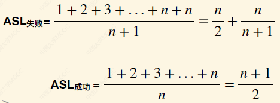

数据结构学习笔记
第一章 绪论1-1.1 数据结构基本概念1、数据结构的三要素2、数据类型和抽象数据类型1-1.2 算法1、算法的特性2、时空复杂度第二章 线性数据结构2-1 线性表2-1.1 定义（逻辑结构）与基本操作（运算）1、逻辑结构与存储结构2、基本操作2-1.2 顺序表示的定义与实现1、顺序表的定义与动静态实现2、实现——插入、删除和查找2-1.3 链式表示——单链表1、定义与特性2、按位插入、在指定节点前后插入3、删除4、查找与求表长5、建立——头插法和尾插法2-1.4 链式表示——其他链表1、双链表2、循环链表3、静态链表2-1.5 顺序表和链表总结2-2 栈与队列2-2.1 栈1、定义与相关操作2、顺序栈的实现3、链栈的实现2-2.2 队列1、定义与基本操作2、顺序实现3、链式实现4、双端队列2-2.3 栈与表达式求值1、三种算术表达式2、手动处理后缀表达式3、手动处理前缀表达式4、机算前后缀表达式5、计算机处理中缀表达式2-2.4 栈和队列的其他应用1、栈实现括号匹配2、栈实现递归3、队列实现遍历4、队列在操作系统中的应用2-3 数组、特殊矩阵的存储2-4.1 数组的存储结构2-4.2 特殊矩阵的压缩存储1、对称矩阵2、三角矩阵3、三对角矩阵4、稀疏矩阵2-4 串2-4.1 定义与实现1、定义2、串的存储结构3、串的实现2-4.2 串的模式匹配1、朴素模式匹配算法2、KMP算法简介3、next数组与KMP实现4、KMP算法的优化第三章 多维数据结构3-1 树与二叉树3-1.1 树的基本概念1、树的基本概念2、常见数学性质3-1.2 二叉树的基本概念与存储1、二叉树的基本概念2、二叉树的基本数学性质3、二叉树的顺序存储4、二叉树的链式存储3-1.3 二叉树的遍历1、二叉树的递归遍历2、非递归遍历3、二叉树的层序遍历4、由遍历序列构造二叉树3-1.4 线索二叉树1、线索树与手动线索化2、线索化的代码实现3、线索树找前驱后继3-2 树的存储3-2.1 树和森林的存储1、双亲表示法2、孩子表示法3、孩子兄弟表示法3-2.2 树和森林的转换和遍历1、树、森林和二叉树的互相转换2、树的遍历3、森林的遍历3-3 树和森林的应用3-3.1 哈夫曼树1、定义2、构造3、哈夫曼编码3-3.2 并查集1、定义2、实现3、扩展：并查集的优化3-4 图3-4.1 图的概念与基本操作1、概念2、图的分类3、几种特殊图4、基本操作3-4.2 图的存储1、邻接矩阵法2、邻接表法3、十字链表法4、邻接多重表法3-4.3 图的遍历1、BFS2、DFS3、遍历序列和生成树3-5 图的应用3-5.1 最小生成树1、概念2、Prim算法3、Kruskal算法3-5.2 最短路径问题1、BFS算法2、Dijkstra算法3、Floyd算法3-5.3 DAG图1、DAG图与表达式2、DAG图与拓扑排序3、DAG图与逆拓扑排序3-5.3 关键路径1、AOE网与关键路径2、相关计算第四章 查找4-1 查找、顺序查找和折半查找4-1.1 查找的基本概念4-1.2 顺序查找1、思想与实现2、优化4-1.3 折半查找4-1.4 分块查找2、优化4-2 树形查找4-2.1 二叉排序树BST1、定义与查找2、插入、构造与删除4-2.2 平衡二叉树AVL1、定义2、调整最小不平衡子树3、删除4-2.3 红黑树RBT1、来源与定义2、插入操作3、删除操作4-2.4 B-树与B+树1、m叉查找树和B树2、B树的插入3、B树的删除4、B+树4-3 散列表4-3.1 散列表与散列函数1、定义2、构造散列函数4-3.2 处理冲突1、拉链法2、开放定址思想第五章 排序5-1 内部排序5-1.1 插入排序1、插入排序2、折半插入排序3、希尔排序5-1.2 交换排序1、冒泡排序2、快速排序5-1.3 选择排序1、简单选择排序2、堆排序3、堆的插入与删除5-1.4 归并排序5-1.5 基数排序5-2 外部排序5-2.1 外部排序1、外排与内排2、优化思路3、败者树5-2.2 置换-选择排序5-2.3 最佳归并树
第一章 绪论
1-1.1 数据结构基本概念
数据：信息的载体，是描述客观事物属性的数、字符及所有能输入到计算机中并被计算机程序识别和处理的符号的集合。
数据元素与数据项：数据元素是数据的基本单位，常作整体考虑。一个数据元素可由若干数据项组成，数据项是构成数据元素的不可分割的最小单元。
数据结构：相互之间存在一种或多种特定关系的数据元素的集合。
数据对象：具有相同性质的数据元素的集合，是数据的一个子集。
1、数据结构的三要素
即讨论一种数据结构时要关注的三个方面。分别是：
逻辑结构（集合，线性，树形结构，图等）；
物理结构（实际存储的结构，如顺序、带指针的链式、索引、散列）；物理结构会影响到空间的分配、运算的速度。
运算方式。
2、数据类型和抽象数据类型
数据类型是一个值的集合和定义在此集合上的一组操作的总称，按可分与否有两种类型：
原子类型。其值不可再分的数据类型。如Bool。
结构类型。其值可以再分解为若干成分（分量）的数据类型。如字符串。
抽象数据类型（Abstract Data Type，ADT）是抽象数据组织及与之相关的操作。定义一个ADT，就是定义数据的逻辑结构与运算，也就是定义了一个数据结构。ADT不涉及具体的物理结构。
1-1.2 算法
1、算法的特性
程序=算法+数据结构。
算法（Algorithm）是对特定问题求解步骤的一种描述，它是指令的有限序列，其中的每条指令表示一个或多个操作。其特性为：
有穷性。一个算法必须总在执行有穷步之后结束，且每一步都可在有穷时间内完成。算法必须有穷，程序可以无穷，如一个死循环可称为一个程序。
确定性。算法中每条指令须有确切的含义，相同的输入只能得到相同的输出。
可行性。算法中描述的操作都可以通过已经实现的基本运算执行有限次来实现。
输入。一个算法有0或多个输入，这些输入取自于某个特定的对象的集合。
输出。一个算法有一或多个输出，它们是与输入有着某种特定关系的量。
好算法的特点：正确性；可读性；健壮性（鲁棒性）；高效率，低存储需求（时间空间复杂度低）。
2、时空复杂度
时间复杂度T(n)：用大O表示阶数。如T1(n)=O(n^2)。常见的从小到大有常数、对数（要区分底数，正如幂函数区分指数）、幂函数、指数函数、阶乘、自身乘方。
计算时间复杂度时，有可能出现最好、最坏情况，以及平均情况（所有输入示例等概率出现的情况下，算法的期望运行时间）。默认的时间复杂度是指平均情况。若最好情况是对数，最坏情况是阶乘，那么平均也是阶乘。
空间复杂度用S(n)表示，也分为常数、对数...等。也用大O表示法。
一种较为复杂的情况：递归调用。公式：空间复杂度=递归调用的深度。举例：程序A：f(n)的常量有a/b/c，运行后会调用f(n-1)，直到n=1，那么S(n)=O(n)。程序B：g(n)的常量是flag[n]，运行后会调用f(n-1)，直到n=1，那么S(n)=O(n^2)。
第二章 线性数据结构
2-1 线性表
2-1.1 定义（逻辑结构）与基本操作（运算）
1、逻辑结构与存储结构
线性表（Linear List）是数据类型相同的n个数据元素的有限序列。其中n为表长，当n = 0时线性表是一个空表。若用L命名线性表，则其一般表示为L = (a1, a2, … , ai, ai+1, … , an）。
特点：有限；有序。如自然数无限，不是线性表。
名词：表头元素，表尾元素；直接前驱，直接后继；位序（第i个）。
线性表一般有顺序、链式存储 两种方式。前者代表为顺序表，后者代表为链表。顺序表的特点：
随机访问，即可以在O(1)时间内找到第i个元素。
存储密度高，每个节点只存储数据元素。
拓展容量不便（即便动态分配，时间复杂度也较高）。
插入、删除操作不方便，需要移动大量元素。
2、基本操作
主要是注意带地址的是修改、创建和销毁的，不带的一般是查找等。
InitList(&L)：初始化。构造一个空的线性表L，分配内存空间。
DestroyList(&L)：销毁操作。销毁线性表，并释放线性表L所占用的内存空间。
ListInsert(&L, i, e)：插入操作。在表L中的第i个位置上插入e。
ListDelete(&L, i, &e)：删除操作。删除表L中第i个位置的元素，并在e位置返回删除元素的值。
LocateElem(L, e)：按值查找操作。在表L中查找具有给定关键字值的元素。
GetElem(L, i)：按位查找操作。获取表L中第i个位置的元素的值。
其他常用操作：
Length(L)：求表长。返回线性表L的长度，即L中数据元素的个数。
PrintList(L)：输出操作。按前后顺序输出线性表L的所有元素值。
Empty(L)：判空操作。若L为空表，则返回true，否则返回false。也写成isEmpty。
2-1.2 顺序表示的定义与实现
1、顺序表的定义与动静态实现
顺序表——用顺序存储的方式实现线性表顺序存储。把逻辑上相邻的元素存储在物理位置上也相邻的存储单元中，元素之间的关系由存储单元的邻接关系来体现。
存放位置：设表头元素位置是LOC，那么第n个元素位置是 LOC + (n-1)*sizeof(EleType)。在内存中连续存储。注：C语言中int大小为4B。
xstruct SqList { //定义一个字符顺序表 char data[MaxSize]; int len; //长度};
void initList(SqList& L) { for (int i = 0; i < MaxSize; i++) L.data[i] = 0; L.len = 0;}静态分配问题在于无法灵活改变空间。于是我们可以动态分配空间。C中使用malloc函数来分配连续内存空间，C++使用new、delete即可。
xxxxxxxxxxtemplate<typename T> struct SqList{ // 定义一个通用顺序表结构体 T *data; // 动态分配的数组指针 int len, size; // 长度，容量};
template<typename T> void initList(SqList<T> &L, int defaultSize = 10){ // 默认初始容量为10 L.data = new T[defaultSize]; L.len = 0; L.size = defaultSize;}
template<typename T> void increaseSize(SqList<T> &L, int l, int maxSize = 30){ // 默认最大容量为30 if(L.size + l > maxSize) return;
T *p = L.data; L.data = new T[L.size + l]; for(int i = 0; i < L.len; i++) L.data[i] = p[i]; L.size += l; delete[] p;}由于实现是使用复制，所以时间开销大。
2、实现——插入、删除和查找
注意如果不加“&”，则被调用函数中处理的是参数数据的复制品。
下面我们给静态顺序表实现插入。我们的插入操作是遍历，所以时间复杂度为1次。
xxxxxxxxxxbool insert(SqList &L, int i, char e){ if(i<1 || i>L.len+1 || L.len>=MaxSize) return 0; for(int j=L.len; j>=i; j--) L.data[j] = L.data[j-1]; //元素后移 L.data[i-1] = e; L.len++; return 1;}实现删除操作。删除表L中第i个位置的元素，并用e返回删除元素的值。复杂度也是线性。
xxxxxxxxxxbool del(SqList& L, int i, char& e){ //e用来存储被删除的元素 if(i<1 || i>L.len) return 0; e=L.data[i-1]; //将被删除的元素赋值给e for(int j=i;j<L.len;j++) L.data[j-1]=L.data[j]; L.len--; return 1;}如果按位查找，可以实现常数复杂度，即所谓的“随机存取”特性；如果按值查找，返回位置，那么还是线性复杂度。
xxxxxxxxxxchar getElem(SqList L, int i){ return L.data[i-1]; //健壮性，越界检查等省略}
int locateElem(SqList L, char e){ for(int i=0; i<L.len; i++) if(L.data[i] == e) return i+1; //此处注意，如果是结构体，不能用==号。伪代码在旁边注明即可 return 0;}
2-1.3 链式表示——单链表
1、定义与特性
链表的逻辑结构是线性表，物理结构是链式存储。
顺序表的优点：可随机存取，存储密度高；缺点：要求大片连续空间，改变容量不方便。
链表优点：不要求大片连续空间，改变容量方便；缺点：不可随机存取，要耗费一定空间存放指针。
xxxxxxxxxxtypedef struct Node{ ElemType data; struct LNode *next;}Node, *linkList; //虽然Node * 就是linkList，但可读性更高
Node * getElem(linkList L, int i){ int j=1; Node *p=L->next; if(i==0) return L; if(i<1) return NULL; while(p!=NULL && j<i){ p=p->next; j++; } return p;}2、按位插入、在指定节点前后插入
按位插入：平均时间复杂度为n。
xxxxxxxxxxbool listInsert(linkList &L, int i, Ele e){ // 带头结点 if(i<1) return 0; Node *p=L; int j=0; while(p!=NULL & j<i-1){ //思路：找到第i-1个节点 p=p->next; j++; } if (p == NULL) return 0; Node *s = (Node *)malloc(sizeof(Node)); s->data = e, s->next = p->next; p->next = s;}
//如果不带头结点，难点是在第一个位置插入元素，其他一样...if（i==1){ Node *s = (Node *)malloc(sizeof(Node)); s->data=e, s->next=L; L=s; //第一个节点变为s return 1;}在指定节点前后插入：时间复杂度为O(1)。在指定节点插入：
xxxxxxxxxxbool insertAfter(Node *p, Ele e){ if(p==NULL) return 0; Node *s = (Node *)malloc(sizeof(Node)); s->data = e, s->next = p->next; p->next = s; //s在p之后}
bool insertBefore(Node *p, Ele e){ //理论上前插时间复杂度为O(n)，因为单链表不能找到上一个；但我们可以这样： if(p==NULL) return 0; Node *s = (Node *)malloc(sizeof(Node)); s->data = p->data, s->next = p->next; //此处还是把s放在p后面，但是交换了s和p的内容，顺利达成目的！ p->data = e; //s在p之后}3、删除
按位删除（带头结点）：思路是先让p=L，然后p往后数到i-1，然后让p->next = p->next->next。但这样可能会有内存泄漏，所以可以用q来存储p->next，然后free(q)。复杂度线性。
按值删除思路与前序插入类似：要删除p，那么我们直接让p变成其后续，然后删除其后续。复杂度为常数。
xxxxxxxxxxbool delNode(Node *p){ Node *q=p->next; p->data=q->data; p->next=q->next; free(q); return 1;}4、查找与求表长
按位查找：返回第i个元素的值。从表头循环到第i个然后直接返回即可。复杂度线性。
按值查找：返回值为e的Node。复杂度线性。
求表长：即查找p->next为NULL的p节点的位置。
5、建立——头插法和尾插法
如果要建立链表，可以使用头插法和尾插法。前者算法简单，但是插入顺序是反向的。
xxxxxxxxxxlinkList headInsert(linkList &L){ Node *s; int x=1; L = (linkList)malloc(sizeof(Node)); L->next = NULL; //建立空链表 while(x > 0){ scanf("%d", &x); s = (Node*)malloc(sizeof(Node)); s->data = x; s->next=L->next; L->next=s; } return L;}若不带头结点，空表判断是L==NULL，问题更多；而带头结点后空表判断是L->next==NULL。
头插法的重要应用：倒置一个现有的链表。
尾插法：多了一个表尾指针，使得复杂度为线性。如果不用表尾指针，那么复杂度就是2次。
xxxxxxxxxxlinkList tailInsert(linkList &L){ Node *s, *r = L; int x=1; //设数据类型为整形 L = (linkList)malloc(sizeof(Node)); L->next = NULL; //建立空链表 while(x > 0){ //先在表尾指针r后插入新节点，再让指针指向新节点 scanf("%d", &x); s = (Node*)malloc(sizeof(Node)); s->data = x; r->next=s; //s接在现在的尾节点后面 r=s; //最后让表尾指针指向现在的尾 } r->next = NULL; //置空 return L;}
2-1.4 链式表示——其他链表
1、双链表
双链表可进可退，可正逆向检索，但存储密度更低一些。
xxxxxxxxxxtypedef struct DNode{ ElemType data; struct DNode *prior, *next;}DNode, &DLinkList;
bool initDLinkList(DLinkList &L){ L = (DNode *)malloc(sizeof(DNode)); L == NULL ? : return false; L->prior = NULL, L->next = NULL; //头结点的前序永远是NULL return true;}
bool isEmpty(DLinkList L){ return (L->next == NULL);}插入：按位/按值插入和之前一样；但前插/后插现在是一样的，借助prior即可。
删除：按位/按值删除，利用后删操作。头结点在销毁表时才能删除。
遍历：前后向遍历都很方便，但前向遍历要记得跳过头结点。
双链表不可随机存取，按位查找、按值查找操作都只能用遍历的方式实现，都是线性复杂度。
2、循环链表
有单双两种。
循环单链表实际上就是让最后一个节点指向头结点。
循环双链表：表头的prior指向表尾，表尾的next指向表头。
无论哪种，初始化时都要让表头的next和prior（如果有）指向自己。
判断一个节点是表尾：p的next指向L。
3、静态链表
一个普通的链表在存储结构上是不要求连续的，可在内存中散乱分布。静态链表则是分配一整片连续的内存空间，各个结点集中安置。
在静态链表中，每个节点存储的指针不是真正的位置，而是相对位置，我们利用起始地址addr来计算下个元素的地址。
既然是静态的，那么其长度也是有限的。我们可以用0来表示该节点空闲，-1表示到达表尾。
实际上这是利用数组方式实现的，指针被省略了。操作系统的文件分配表FAT即是静态链表。
2-1.5 顺序表和链表总结
逻辑结构相同，都是线性表。存储结构：
顺序表顺序存储。支持随机存取，存储密度高；但空间分配不便。
链表链式存储。在离散的小空间存取方便，改变容量方便。但不可随机存取，存储密度低。
我们一般对比创建销毁，增删改查方面的不同。
创建：
顺序表：静态分配容量不变，动态可变但是线性代价。
链表：只需要分配一个头结点（或者不需要，分配一个头指针）。
销毁：
顺序表：修改len=0。如果动态分配，手动free；静态分配则系统自动回收。
链表：依次free每个节点，最后删除头结点。
增删：注意前插后插、按位按值。
顺序表：所有后续元素都要前/后移，时间开销高。
链表：修改指针即可。
改查：按位按值查。
顺序表：按位O(1)，即随机存取；乱序按值O(n)，有序按值O(log2n)。
链表：按位按值都是线性。
适用场景：链表适用于变化较多的场景。表长有范围，查询操作多的用顺序表。
2-2 栈与队列
2-2.1 栈
1、定义与相关操作
栈（Stack）是只允许在一端进行插入或删除操作的线性表。如一摞轮胎只能从顶上拿。特点为后进先出(last in first out, LIFO)。
相关名词：栈顶（可插入和删除的一端），栈底，空栈，弹栈（pop），压栈（push）。
基本操作都很简单，无非就是创销增删查。注意只对栈顶操作即可。

一个常考的排列组合问题：进栈顺序给定，那么有哪些合法的出栈顺序？
答案是：
2、顺序栈的实现
顺序栈实际上就是一个单端出入的数组，空间连续分配，类似一个静态线性表。都是O(1)时间复杂度。
xxxxxxxxxxtypedef struct{ ElemType data[maxSize]; short top;} sqStack;
void init(sqStack &s){ s.top=-1; //初始化栈顶指针为-1，代表没有后续元素}
bool isEmpty(sqStack s){ //判空 return (s.top==-1);}
bool push(sqStack &s, ElemType e){ //压栈 S.top==maxSize-1 ? : return 0; s.top++; s.data[s.top]=e; return 1;}
bool pop(sqStack &s, ElemType &e){ //弹栈，用e接收 S.top==-1 ? : return 0; e=s.data[s.top]; s.top--; return 1;}
bool getTop(sqStack &s, ElemType &e){ //读栈顶并用e接收，由于有栈顶指针所以直接读就行 S.top==-1 ? : return 0; e=s.data[s.top]; return 1;}缺点也是大小不可变。
共享栈：两个栈共享同一片空间，但一个在正一个在反。比如top0在上top1在下，那么top0+1=top1则栈满。
3、链栈的实现
此时创建最好使用头插法。头结点作为栈顶，尾结点的next为NULL。
xxxxxxxxxxtypedef struct Node { int data; struct Node *next;} Node, *linkStack;
//初始化栈void InitStack(linkStack &L){ L = (Node*)malloc(sizeof(Node)); //L是栈顶元素 L->next = NULL; //建立空链表}
//栈判空bool StackEmpty(linkStack L){ return (L->next == NULL);}
//入栈void Push(linkStack &L, int e){ //压栈 Node *s = (Node*)malloc(sizeof(Node)); s->next = L->next, s->data = e; L->next = s;}
//出栈bool Pop(linkStack &L,int &e){ if(L->next == NULL) return 0; //若为空则失败 Node *s = L->next; e = s->data; L->next = s->next; free(s); return 1;}
bool getTop(linkStack L, int &e){ if(L->next == NULL) return 0; //若为空则失败 e = L->next->data; return 1;}
2-2.2 队列
1、定义与基本操作
队列（Queue）是只允许在一端进行插入，在另一端删除的线性表。特性为先进先出。
相关名词：队头（插入）、队尾（删除）、空队。
创建时，一般来说还是会有一个队头元素。
2、顺序实现
即静态实现。注意应当实现为环状循环队列。
常见的两种方案：初始化时使rear=front=0，或者使用一个size常量记录长度。
第三种方案：使用一个bool，删除操作后tag为0，插入后tag为1；当rear=front时，tag为1说明队满。
xxxxxxxxxxtypedef struct{ int data[maxSize]; int front, rear;} sqQueue;
void init(sqQueue &Q){ Q.rear = Q.front = 0;}
bool isEmpty(sqQueue Q){ return (Q.rear == Q.front); //只在非循环队列可以用}
bool enQueue(sqQueue &Q, int e){ //已满则失败 Q.data[Q.rear] = e; Q.rear = (Q.rear+1)%maxSize; //环状队列}3、链式实现
链式实现不存在循环问题。头结点永远存在，尾指针指向最后一个节点。注意front是队尾（删除），rear是队首（插入）。
xxxxxxxxxxtypedef struct Node { int data; struct Node *next;} Node;
typedef struct{ Node *front, *rear;}linkQueue;
void init(linkQueue &Q){ Q.rear = Q.front = (Node*)malloc(sizeof(Node)); Q.front->next = NULL; //建立空链表}
bool isEmpty(linkQueue Q){ return (Q.rear == Q.front); //这里可以放心用}
void enQueue(linkQueue &Q, int e){ //将新元素放在rear后，然后让rear指向新元素 Node *s = (Node*)malloc(sizeof(Node)); s->next = NULL, s->data = e; Q.rear->next = s; Q.rear = s;}
bool deQueue(linkQueue &Q, int &e){ if(isEmpty(Q)) return 0; //若为空则失败 Node *s = Q.front->next; e = s->data; Q.front->next = s->next; if(Q.rear == s) Q.rear=Q.front; free(s); return 1;}若不带头结点，需特殊处理的是第一个元素入队。
4、双端队列
双端队列：只允许从两端插入、两端删除的线性表。实际上是一个双头的栈。
输入受限的双端队列：双端都允许删除，但只允许从一端插入。
插入受限的双端队列：双端都允许插入，但只允许从一端删除。
常见题型：判断输出序列合法性。
单端队列只有一种输出序列。
如果允许随时出栈和入栈，那么栈的合法序列数为卡特兰数，即
栈中的合法序列在双端中也一定合法。
大多题目只需要求栈的合法序列数，以及代入验证是否合法。
2-2.3 栈与表达式求值
1、三种算术表达式
我们所熟知的中缀算术表达式由3个部分组成：操作数，运算符和界限符（括号，限定了运算符的作用范围）。
波兰数学家发明了两种不需要界限符的表达式：前缀表达式（波兰）和后缀表达式（逆波兰）。
由于加法、乘法等具有交换律，所以一个中缀表达式可能转换成多种前后缀表达式。
2、手动处理后缀表达式
手算中缀转后缀：左边的运算符能算的要先算，称为“左优先”原则。
先确定中缀表达式中各运算符的运算顺序，挑出最先运算的运算符。
选择下一个运算符，按【左 右 符】的方式组合为新操作数。
重复2直到完成。
验证：如果按从左到右转化，后缀表达式的运算符排列顺序和中缀生效顺序一样则一定正确。计算机处理的也是这样。不一样的也可能对（未按从左到右）。
人如何计算后缀表达式（后缀转中缀）：先找到第一个运算符，将运算符移到两个操作数之间，然后手动加括号来表示顺序。重复即可。
3、手动处理前缀表达式
手算中缀转前缀：右边的运算符能算的要先算，称为“右优先”原则，即先算右边的。
先确定中缀表达式中各运算符的运算顺序，挑出最先运算的运算符。
选择下一个运算符，按【符 左 右】的方式组合为新操作数。
重复2直到完成。
验证：若按右优先原则，那么得到的结果中，运算符一定是逆序排列的。
人如何计算前缀表达式（前缀转中缀）：先从右边找到第一个运算符，将运算符移到两个操作数之间，然后手动加括号来表示顺序。重复即可。
4、机算前后缀表达式
我们发现，在手算后缀表达式时，先找运算符，然后让运算符前面最近的两个操作数进行运算（保持顺序），运算完后合并为一个操作数。其特点是：最后出现的操作数先被运算，即后进先出，故可用栈表示。
计算机处理后缀的大致思路：
从左往右扫描。若右面没有了，则进行判断：栈内只剩一个数，就是结果；剩多个数就报错。
扫描到操作数就入栈；然后回到1。
扫描到运算符则弹出两个栈顶元素（此处注意：先出栈的是右操作数）并运算，其结果压入栈顶。然后回到1。
xxxxxxxxxxbool inversePolish(char str[], double &answer){ // 逆波兰，用answer来接收答案 listStack S; initStack(S); double leftOperend, rightOperend, temp; char operator; for(int i=0; i<str.length; i++){ if(isNumber(str[i])) Push(S, str[i]); else { Pop(S, rightOperend), Pop(S, leftOperend); temp = calculate(leftOperend, rightOperend, operator); //计算，其中的安全处理省略 Push(S, temp); //压入栈顶 } } if(getLen(S) = 1 && isNumber(getTop(S)) { answer = getTop(S); return 1; } else return 0;}前缀表达式的机算：
从右往左扫描。若左面没有了，则进行判断：栈内只剩一个数，就是结果；剩多个数就报错。
扫描到操作数就入栈；然后回到1。
扫描到运算符则弹出两个栈顶元素（此处注意：先出栈的是左操作数）并运算，其结果压入栈顶。然后回到1。
代码省略，实现思路类似。
5、计算机处理中缀表达式
机算中缀表达式转后缀表达式的难点主要在于“优先级”概念的引入。大致思路为：
建立一张优先级表，越高的优先算。建立一个空的后缀表达式数组。建立一个专门用来存储操作符的栈；左括号可以入栈，右括号不行，但左右括号都不能加入后缀表达式数组。注意要把所有括号的类型统一为小括号方便处理。
从左往右处理。
若遇到操作数：直接加入后缀表达式，放在从左往右的第一个空位。
若遇到界限符：遇到左括号直接入栈，遇到右括号则依次弹出栈中运算符并加入后缀表达式，直到弹出“（”。
若遇到运算符：依次弹出栈中优先级高于等于当前运算符的所有运算符，并加入后缀表达式。若遇到栈中的“（”，或者栈已空，则停止。之后再把当前操作符入栈。此处弹出的优先级相等的运算符保证了左优先原则。
简记：右括号找左括号；运算符弹出所有优先级不低于它的，遇到左括号停止。
题型：给出一个栈，问执行到第n步时栈内的情况。
中缀表达式的机算：中缀转后缀然后直接计算后缀。
中缀转后缀的栈用来存储操作符，计算后缀的栈用来暂存操作数。
2-2.4 栈和队列的其他应用
1、栈实现括号匹配
括号匹配问题是：每出现一个右括号，就“消耗”一个最后出现的左括号。可用栈来实现。
思想：遇到左括号即入栈，右括号确认匹配后出栈，否则报错。如果最后还剩或括号不足，也报错。
xxxxxxxxxxbool bracketCheck(char str[], int len){ listStack S; initStack(S); //使用链栈，使用接口时需稍作说明 // 先检测是否含有左右括号之外的其他字符，若有则删除或报错 if(isLeftBracket(str[i])){ //左括号 Push(S, str[i]); } else { if (isEmpty(S)) return 0; char top; Pop(S, top); if(!isRightBracket(str[i])) return 0; //若不是右括号则出错 if(!match(top, str[i])) return 0; //若栈顶和新括号不匹配则出错 } return isEmpty(S); //检索完后栈空说明成功}
bool isLeftBracket(char c){ return (c == '(' || c == '[' || c == '{');}
bool isRightBracket(char c){ return (c == ')' || c == ']' || c == '}');}
bool match(char c1, char c2){ return ((c1=='(')&&(c2==')') || (c1=='[')&&(c2==']') || (c1=='{')&&(c2=='}'));}2、栈实现递归
函数调用的特点恰好和栈相同，也是LIFO。函数调用时，需一个栈来存储一些内容：调用返回地址；实参；局部变量。
递归调用时，函数调用栈可称为“递归工作栈”。每进入一层递归，就将递归调用所需信息压入栈顶；每退出一层递归，就从栈顶弹出相应信息。
缺点：太多层递归会导致栈溢出；效率低，包含太多重复计算。
xxxxxxxxxx// 求阶乘int factorial(int n){ return (n==0 || n==1) ? 1 ：n*factorial(n-1);}
// 斐波那契int Fib(int n){ switch(n){ case 0 : return 0; case 1 : return 1; default : return Fib(n-1)+Fib(n-2); }}3、队列实现遍历
此处我们在队尾放入元素，在队首删除，实质上是一样的。
二叉树的按层次遍历：
先遍历根节点，将其放入队列。
把根节点的左、右孩子依次放到队尾。然后根节点所有子节点都遍历完了，于是从队列中删除根节点。
将左孩子的左右孩子同样加入队尾，然后左孩子遍历完了，出队。
依次遍历队首元素的左右孩子，然后遍历完后删除。
图的广度优先遍历：
从一号节点出发，放入队列。
检查发现1号相邻的2,3号节点未被遍历，于是依次放入队尾。现在1号所有相邻点都被放入队列，于是一号删除。
同理对2进行访问。
4、队列在操作系统中的应用
进程管理中的FCFS策略利用队列完成。
外设的数据缓冲区也可以利用队列。
2-3 数组、特殊矩阵的存储
2-4.1 数组的存储结构
一维数组使用定义。数组元素大小相同，物理上连续存放，数组元素的存放地址LOC + i * sizeof(ElemType)。
二维数组用ElemType array[10][10]定义。可以列优先存储，也可以行优先存储，看应用场景。

如果有一个M行N列的二维数组，起始地址为LOC，则元素b[i][j]的存储地址：
按行优先：
LOC + (i*N + j) * sizeof(ElemType)。按列优先：
LOC + (j*M + i) * sizeof(ElemType)。
2-4.2 特殊矩阵的压缩存储
普通矩阵直接使用二维数组来存储。但如果是特殊矩阵，我们可以使用一些特殊方式压缩存储节省空间。
1、对称矩阵
即关于主对角线对称的矩阵，只存储主对角线和上三角区（或下三角）。
按行优先放入一维数组即可。需要建立一个映射：矩阵中
公式特点：i，j中大的是二次，小的是一次。注意k是从0开始的下标，如果只需要求第几个就不需要减1。
2、三角矩阵
上三角矩阵：下三角的元素都为c。下三角相反。
存储方法：和对称矩阵一样，但数组最后多一个元素c。若是上三角，在i>j时就直接映射到最后一个位置（下标为
3、三对角矩阵
依然使用一维数组压缩存储。采用行优先：第1行和最后一行是2个元素，其余行是3个。
下标为k的元素满足：i=(k+2)/3 + 1 ，j = k+3-2i。
4、稀疏矩阵
稀疏矩阵即非零元素远远少于矩阵元素的个数的矩阵，一般少于三分之一。常用压缩存储有两种。
策略1：顺序存储——三元组<行，列，值>。
策略2：十字链表法。每个节点有5个值，分别存储【所在行，所在列，元素的值，该列下一个元素的行号，该行下个元素的列号】。
2-4 串
2-4.1 定义与实现
1、定义
串，即字符串（String）是由零个或多个字符组成的有限序列。一般记为S = ‘a1a2······an' （n ≥0）。其中，S是串名，单引号括起来的字符序列是串的值。长度为0的串是空串（用
串是一种特殊的线性表，数据元素之间呈线性关系。其数据对象限定为字符集（如中英文字符、数字标点等）。
相关名词：子串（串中任意个连续的字符组成的子序列），字符位置，子串位置。
串的基本操作，如增删改查等，通常以子串为操作对象。
需要注意的就是求子串、定位以及比较（一般需要重载操作符）。
一般官方提供的字符串比较操作是逐位比较，返回大于等于小于。若扫描过的所有字符相同，则长的更大。
2、串的存储结构
顺序存储：静态数组和动态数组。需要分配一个基地址以及串长。由于串可能有开头和结尾，所以有多种方案。
教材采用的静态数组法：不使用ch[0]，最后一个位置存变量长度。
链式存储：存储密度低，指针4B字符才1B。可以结合顺序存储，每个节点存多个字符：
3、串的实现
这部分不在2023版大纲内，只要求掌握串的模式匹配。
2-4.2 串的模式匹配
1、朴素模式匹配算法
字符串的模式匹配：在主串中找到与模式串相同的子串，并返回其所在位置。
子串是主串的一部分，一定存在；而模式串不一定能在主串中找到。
所谓的朴素模式匹配算法其实就是暴力匹配：设主串长度为n，模式串长度为 m。从左到右将主串中所有长度为m的子串依次与模式串对比，直到找到一个完全匹配的子串，或所有的子串都不匹配为止。最多对比n-m+1个。
若当前子串匹配失败，则主串指针i指向下一个子串的第一个位置（后移一格），模式串指针j回到模式串的第一个位置（前移到头）。
最坏时间复杂度：O(mn)。若m远小于n，则可近似为O(n)。
xxxxxxxxxxint index(String S, String T){ int i=0,j=0; while(i<S.len && j<T.len){ if(S[i]==T[j]) ++i, ++j; else i=i-j+2, j=0; } if(j>T.len) return i-T.len; else return 0;}2、KMP算法简介
KMP为三位提出人的姓氏首字母。
朴素算法中，一旦发现当前这个子串中某个字符不匹配，就只能从头开始匹配下一个子串，效率很低。
在不匹配的字符之前，子串与模式串一致；所以我们能够知道已经被检查完了这个部分的信息，可以跳过部分子串。
即：我们要发现模式串与本身能匹配的最大位置，以及匹配失败的字符位置的关系，子串指针移到它与本身能匹配的最小位置。
总之：匹配失败时i需要回溯（朴素需要），令模式串指针j变化即可。模式串越短，做法越高效，越接近O(n)。
注意，此处j=0代表还未开始比较，j=1才是开始比较第一个元素。
3、next数组与KMP实现
所谓next数组，就是我们在第k个元素匹配失败时令模式串指针应该回到的地方。它与主串没有关系，只与模式串本身有关。
next数组的作用：当模式串的第 j个字符失配时，从模式串的第 next[j] 的继续往后匹配。
注意next[0]没有值，因为j=0时说明字符串还没开始比较，自然不知道是否不匹配。
xxxxxxxxxxint indexKMP(String S, String T, int next[]){ //next数组，生成函数在后文 int i=1,j=1; while(i<S.len && j<T.len){ if(j==0 || S[i]==T[j]) ++i, ++j; //模式串指针在最前，或者两个字符相同，那么继续比较后继字符 else j = next[j]; // 模式串移动 } if(j>T.len) return i-T.len; else return 0;}最坏复杂度O(m+n)，其中求next数组时间复杂度为O(m)。
手算求next数组：
next[1]固定为0。第一个字符不匹配，当然只能开始匹配下一个。其他位置j一般不为0，置1即可。
next[2]固定为1。第二个字符不匹配，当然要从第一个字符开始重新匹配。i不变。
后面的求法：在不匹配的位置前划出分界线，模式串j不断减（往前移），直到找出能对上的位置，或者模式串完全跨过分界线（j=1）。
4、KMP算法的优化
比如abaabc这个字符串的next[3]为1，即第三个字符匹配不上。但是第三个字符和第一个都是a，第一个匹配不上第三个肯定也匹配不上，所以next数组是可以优化的。优化后称为nextval数组。优化后的nextval数组为：
具体实现不会在408统考中考。
第三章 多维数据结构
3-1 树与二叉树
3-1.1 树的基本概念
1、树的基本概念
树是n（n为非负整数，n=0称空树）个节点的有限集合，是一种非线性的数据结构，其有以下特点：
除根节点无前驱外，任何节点有且仅有一个前驱；
每个节点可以有任意个后继；若无后继为叶节点，有后继为分支节点（或称终端、非终端节点）。
非空树应当满足：有且仅有一个根节点，其余节点可以分为m个互不相交的有限集合（每个集合本身是子树）。
树的常见度量数值：节点的深度（层次，从上往下数）、高度（从下往上）；树高（树深，树的层数）；结点的度（子节点数）， 树的度（树中结点的度的最大值）；m叉树。
常见的节点名称：祖先、子孙、父节点、孩子节点；兄弟（brothers，同父节点）节点，堂兄弟（siblings）节点。
常见概念：森林（0或多棵互不相交的树的集合）；两个节点间的路径（从上往下）；路径长度：经过的边数；有序树、无序树（各子树从左到右有序或无序）。
2、常见数学性质
一般来说这些基本性质也即是常考考点。
结点数=总度数+1（根节点）。不仅对整体树成立，对某个子树也成立，但对森林不成立（结点数=总度数+树的棵数）。
度为m的树和m叉树的区别。
度为m的树以及m叉树的第k层都至多有
高为h的m叉树至少有h个结点，但度为m的树至少有h+m-1个结点。
具有n个结点的度为m的树的最小高度=m叉树的最小高度 =
3-1.2 二叉树的基本概念与存储
1、二叉树的基本概念
二叉树由根节点+两个互不相交的子树组成，左右子树又分别是二叉树。其特点为：
二叉树的所有节点度不大于2。存在空树。
二叉树有序，故左右子树不能互换位置。
5种状态：空；只有左子树/右子树；只有根节点；左右子树都有。
几种特殊的二叉树：非常容易出计算选择题。
满二叉树：高度为h，结点数为
只有最后一层有叶节点；不存在度为1的结点，度都是2的整次幂。
按层序从1开始编号，结点i的左孩子为2i，右孩子为2i+1；结点i的父节点为[𝑖/2]（若存在）。
完全二叉树：每个节点都与高度为h的满二叉树一一对应。
叶节点只存在于最后两层；度为1的结点最多一个，且其孩子一定是左孩子。
按层序从1开始编号，结点i的左孩子为2i，右孩子为2i+1；结点i的父节点为[𝑖/2]（若存在）。
i ≤ [𝑛/2] 为分支结点，i > [𝑛/2] 为叶子结点。(都是向下取整)
二叉排序树（BST）：要么为空，要么满足左子树的所有节点<根节点<右节点，对所有子树都成立。
特殊应用：用于元素的排序与搜索，常考其插入后的重排序过程。
平衡二叉树（AVL树）：树上任一结点的左子树和右子树的深度之差不超过1，搜索效率更高。
2、二叉树的基本数学性质
对于普通的二叉树：
非空二叉树中记
二叉树第i层至多
对于完全二叉树：
有n个结点的完全二叉树，高度h =
高为h的完全二叉树至少
3、二叉树的顺序存储
顺序存储的结构中没有指针，每个节点一个bool值说明该节点是否为空。
如果是完全二叉树，那么直接顺序存储即可。此处有几个重要的基本计算。
非完全二叉树如果要顺序存储，那么一定要将节点编号与完全二叉树一一对应。上面的重要操作也不完全成立。
弊端：如果二叉树极不平衡，那么最坏情况下（都只有右孩子），至少需要
4、二叉树的链式存储
每个节点中包含一个数据值，还有两个指针（lchild，rchild）。
xxxxxxxxxx//插入新节点作为根节点的右孩子BiTNode * p = (BiTNode *) malloc(sizeof(BiTNode));p-data=2, p->lchild = NULL, p->rchild = NULL;root -> rchild = p;此种方式遍历只能从根开始，故可以使用三叉链表结构，即存储一个parent指针指向父节点。
n个结点的二叉链表一共有n+1个空链域（
3-1.3 二叉树的遍历
1、二叉树的递归遍历
遍历即按某种次序访问一遍所有节点。树都有递归特性：二叉树要么是空树，要么由左右子树+根节点组成。用N、L、R分别代表根、左右子树，则有先序（NLR）、中序（LNR）、后序（LRN）三种遍历方式。它们的区别是先/中/后遍历根节点，而左永远在右前。
对同一棵算术表达式分析树，前中后序遍历分别对应前中后缀表达式，故中序遍历转为中序表达时需加界限符。
xxxxxxxxxxvoid inOrder(BiTree T){ if(T!=NULL){ inOrder(T->lchild); visit(T); inOrder(T->rchild); }}void preOrder(BiTree T){ if(T!=NULL){ visit(T); preOrder(T->lchild); preOrder(T->rchild); }}void postOrder(BiTree T){ if(T!=NULL){ postOrder(T->lchild); postOrder(T->rchild); visit(T); }}三种遍历都会路过每个节点各。先序第一次路过时即访问节点；中序第二次路过访问；后序第三次路过访问。三者的空间复杂度都是O(h)。
2、非递归遍历
二叉树的非递归遍历利用的是栈的思想，以第一节中的图中序为例。
沿根的左孩子一路入栈，直到左孩子为空。即124依次入栈。
弹栈并访问4，发现其右孩子空，故接下来继续弹栈2并访问。
2的右孩子不空，于是将5入栈，现在栈内是15（右边是栈顶）。
5左孩子为空，出栈访问，右孩子也为空，弹栈访问1。
1右孩子不空，入栈，现在栈内有3。3左孩子非空为6，入栈。
6左孩子空，弹栈访问6，6无右孩子，3出栈访问。3无右孩子。
栈空，中序遍历结束。
其代码实现如下：
xxxxxxxxxxvoid inOrder2(BiTree T){ InitStack(S); BiTree p = T; //p是节点 while(p || !isEmpty(S)){ if(p){ Push(S, p); p=p->lchild; } else { Pop(S, p); visit(p); p=p->rchild; } }}前序、后序也类似。后序实现时，要区分指针p是从左孩子返回的还是右孩子返回的，所以需要一个辅助指针r，记录上一次访问的指针。
3、二叉树的层序遍历
树都是分层的，我们可以按层级遍历，即层次遍历。层序遍历算法非递归。
xxxxxxxxxxvoid levelOrder(BiTree T){ //T是根节点 linkQueue Q; initQueue(Q); BiTree P; EnQueue(Q,T); //首先将根节点入队 while(!isEmpty(Q)){ deQueue(Q, P); //出队并将该节点用P存储，方便后续浏览 visit(P); if(P->lchild != NULL) enQueue(Q, p->lchild); if(P->rchild != NULL) enQueue(Q, p->rchild); }}4、由遍历序列构造二叉树
由于遍历序列不带括号，单独的一个遍历序列是无法确认二叉树的形态的。前、后、层级两两组合也不行，必须要中序+任意一种其他序列才能确定。构造完逐一验证！
前+中构造逻辑：
前+中构造逻辑：
层+中构造逻辑：这种实际上最简单，因为从开始前面的每个节点都是根节点。
着手点：前、层的根节点在首位，后的根节点在最后，可以以此找到中的根节点，然后划分为左右子树，逐步推进。
3-1.4 线索二叉树
1、线索树与手动线索化
二叉树的遍历让我们得到一个线性的序列，在此序列中每个元素都有一个前驱（不是指父节点）。现在的问题：如何从遍历序列中任意一个结点出发继续遍历？这在普通二叉树中是不可能的，因为没有指向父元素的指针；同样也找不到前驱。
结论：在普通的二叉树中，我们无法对特定的一个节点寻找其线性后继与前驱，除非给出完整的树重新遍历。
事实上，在中序遍历中，无法找到前驱、后继的节点都一定有空链域。所以，我们可以让其左、右空链域分别指向其线性的前继后驱。
第一个节点的左、末节点的右指针可以指向NULL，也可以用来循环。但我们的线性表不是循环的，所以指向NULL。这样的过程称为线索化，得到的是一棵中序线索二叉树。
当然，这样一来指针就有了两个种类，分别是指向父、子节点和线性的前继后驱。所以我们需要一个标志位说明指针的类型。
另外两种线索二叉树的思路也类似，但前序由根节点开始，后序由根节点结束，所以都只有一个NULL指针。
2、线索化的代码实现
以中序遍历为例，我们只需要在vist函数内加上修改节点的指针与tag的代码即可。注意两个NULL的tag都是1，说明都是线索。
xxxxxxxxxxthreadNode *pre = NULL; //全局变量pre,初始为NULL
typedef struct threadNode{ elemType data; struct threadNode *lchild, *rchild; int ltag, rtag; //为0说明是指向孩子} threadNode, *threadTree;
void createInThread(threadTree T){//中序线索化二叉树T if(T!=NULL){ inTread(T); if(pre->rchild==NULL) pre->rtag=1; //最后一个结点 }}
void inThread(threadTree T){ //中序线索化，实际上逻辑和树的遍历差不多 if(T!=NULL){ inTread(T->lchild); visit(T); inTread(T->rchild); }}
void visit(threadNode *q){ if(q->lchild == NULL){ q->lchild=pre, q->ltag=1; } if(pre!=NULL && pre->rchild==NULL){ pre->rchild=q, pre->rtag=1; } pre = q;}下面实现先序和后序线索化：
xxxxxxxxxx// *pre, threadNode, visit函数和中序一样void creatPreThread(threadTree T){ //前序开始线索化 if(T!=NULL){ preThread(T); if(pre->rchild==NULL) pre->rtag=1; //这步和之前一样，处理最后一个结点，不要忘记 }}
void preThread(threadTree T){ if(T!=NULL){ visit(T); if(T->ltag==0) preThread(T->lchild); //和中序的区别：由于前驱可能已经建立，所以先看lchild是不是前驱线索 preThread(T->rchild); }}
void creatPostThread(threadTree T){ //后序开始线索化 if(T!=NULL){ postThread(T); if(pre->rchild==NULL) pre->rtag=1; //这步和之前一样，处理最后一个结点，不要忘记 }}
void postThread(threadTree T){ if(T!=NULL){ postThread(T->lchild); postThread(T->rchild); visit(T); }}注意，只有先序的线索化要判断T的ltag是否为0，因为最先遍历结点时可能已经设置了lchild。
3、线索树找前驱后继
有了线索树，我们可以快速找到当前遍历顺序的前驱与后继。以中序为例，给出一个节点p：
xxxxxxxxxxthreadNode *firstNode(threadNode *p){ //获取中序的第一个节点，p为根节点 while(p->ltag==0) p=p->lchild; //在中序中，第一个是最左下方的，所以一直找左孩子即可 return p; //同理，找最后一个则一直}
threadNode *nextNode(threadNode *p){ //获取p的下一个结点 if(p->rtag==0) return firstNode(p->rchild); //若右指针是子树，那么右子树的第一个节点即是 else return p->rchild; //否则tag为1，右指针指向线索}
void inOrderThread(threadNode *T){ //O(1)时间复杂度的线索化遍历，非递归 for(threadNode *p=firstNode(T); p!=NULL; p=nextNode(p)) visit(p);}中序可以找到前驱和后继；但是，先序找不到前驱，后序找不到后继。除非用三叉链表法，或者从根节点遍历。
“先序找不到前驱，后序找不到后继”不是指所有节点都找不到，而是每个度为2的结点都找不到。如左图中，先序的2找不到前驱；右图中，后序的4找不到后继。
在中序中，度为2的结点的左右指针分别指向的就是前驱后继。
3-2 树的存储
3-2.1 树和森林的存储
1、双亲表示法
在二叉树的顺序存储中，我们知道非完全二叉树要顺序存储空间利用率很低，但由于二叉树形状固定，数组下标还是可以反应树中元素的位置。但是，普通树的形状不固定，所以只靠数组下标是无法反应结点之间的逻辑关系的。
因此，我们需要借助类似静态链表的存储方式，每个数据元素还存储一个父节点的位置。此处不是利用指针实现的，是数组中的编号。这种存储方式被称为“双亲表示法”。
双亲表示法也可以用来存储森林，每个根节点指针置-1即可。
找双亲方便，但找孩子不方便。适用于并查集等场景。
2、孩子表示法
即用数组顺序存储各个结点，但每个结点中保存数据元素、孩子链表头指针。是顺序存储+链式存储结合。
用一个单独的r值来记录根的位置；存储森林，需要记录多个根的位置。
优点是找孩子很方便，找父节点不便，适用于服务流程树等场景。
3、孩子兄弟表示法
这种存储方法是纯链式存储，存储第一个孩子节点和右兄弟指针。借鉴了二叉树的存储方法，与其类似。
xxxxxxxxxxtypedef struct CSNode{ elemTypr data; struct CSNode *firstchild, *nextsibling;}存储结束后，从存储视角来看类似把一棵树或森林转化为了二叉树。
3-2.2 树和森林的转换和遍历
1、树、森林和二叉树的互相转换
二叉树存储和遍历都很方便，所以我们先将树和森林转为二叉树后再进行遍历。使用孩子兄弟表示法即可，原则为节点的左、右孩子分别为原来的左孩子和右兄弟。转化的时候，最左边的一顺可以直接照抄，然后往右逐渐添加。
可以看到，转换后的二叉树若根节点度数为1，那么一定是树，否则一定是森林。
二叉树转树还是可以利用我们的方法，把最左边的一顺抄下来（只含左孩子）。甚至对每个子树亦可以，大大降低难度。
转森林时，如何看出树的棵数：右边一顺的节点数量，直到遇到没有右子树的情况。
2、树的遍历
先把树转化为二叉树再遍历，有先根遍历后根遍历、层次遍历。思路是：
先根、后根遍历：若树非空，先访问根节点、遍历每棵子树/先遍历子树再访问根节点。是深度优先（DFS）遍历思想。
层次遍历：用队列实现。若树非空，根节点入队；在队列非空时，队头元素出队并visit，同时将该元素的所有孩子入队，循环。
xxxxxxxxxxvoid preOrder(treeNode *R){ if(R!=NULL){ visit(R); while(R还有下一个子树T) preOder(T); //不止两个子树 }}
void postOrder(treeNode *R){ if(R!=NULL){ while(R还有下一个子树T) preOder(T); //不止两个子树 visit(R); }}这里有个易记混的点：对树先根遍历得到二叉树的先序序列，但后根遍历得到的是中序序列。多叉树不存在“中根遍历”。
3、森林的遍历
森林没有唯一的根，所以不是先“根”而是先“序”。
森林有先序遍历，相当于对二叉树先序遍历。
一般没有后根遍历，因为有很多不同的根。
对森林生成的二叉树中序遍历，相当于依次对森林中的每棵树进行后根遍历。
森林实际上是树的集合，严格说来它们不是同层的，故森林一般不用层序遍历。
中序遍历森林：先访问第一棵树的子树森林！子树森林访问完最后再访问根，所以实际上是“后根”。
3-3 树和森林的应用
3-3.1 哈夫曼树
1、定义
一些基础概念：
结点的权：用数字表示。
结点的带权路径长度：从树的根到该节点的路径长度与该节点上权值的积。
树的带权路径长度：所有叶节点的带权路径长度的和（WPL，Weighted Path Length）。
哈夫曼树、最优二叉树：如果只看叶节点，那么带n个叶节点的二叉树有n种。这之中，WPL最小的二叉树就是哈夫曼树。不一定唯一，但一定存在。是无序树，左右子树没有差别。
注意，分支节点没有权值。
2、构造
要构造WPL尽量小的树（即哈夫曼树）的核心思想是，权越小的放在越远的地方。具体算法是：
将这n个结点分别作为n棵仅含一个结点的二叉树，构成森林F。
构造一个新结点，从F中选取两棵根结点权值最小的树作为新结点的左、右子树，并且将新结点的权值置为左、右子树上根结点的权值之和。
从F中删除刚才选出的两棵树，同时将新得到的树加入F中。
重复步骤2和3，直至F中只剩下一棵树为止，此即哈夫曼树。

3、哈夫曼编码
常见的编码方式是固定长度编码，即每个字符用等长的二进制位表示。但实际使用中，字符出现的频率有很大的区别，如果在空间不足的地方，最好使用可变长编码——但一定要保证解码无歧义。
前缀编码：不存在这样一个编码b，b是其他任意一个编码的前缀。这样的编码系统为前缀编码。
哈夫曼编码：按之前的方法，从下到上构建。用各字符出现的频率作为结点的权值即可。
3-3.2 并查集
1、定义
在线性、树形、图结构之外，还有一个常见的逻辑结构——集合。我们可以利用森林来表示多个集合。并查集（Disjoint Set）只进行两种基本操作，即合并与查询（Find，Union），查询操作如：
查找一个元素属于哪个集合：找到根节点。
判断两个元素是否是同一集合：看根节点是否相同。
合并操作：将两棵树合并，让一棵树成为另一棵树的子树即可。
据此，我们可以用森林的存储方法——双亲表示法来进行集合的存储，只需用一个数组即可，保留一个parent节点，根节点parent为1。由于经常进行查找，所以双亲表示法很适合并查集。
2、实现
xxxxxxxxxx//最多的节点个数int DSets[size];
void init(int S[]){ for(int i=0;i<size;i++) S[i]=-1; //初始化全部为-1 }
int Find(int S[], int x){ //找x所属集合，返回其根节点； while(S[x]>0) x=S[x]; return x;}
void Union(int S[], int r1, int r2){ //将r1和r2两个集合合并 if(r1 != r2) S[r2] = r1; //直接将r2连到r1下面，毕竟不是二叉树}此时，Find时间复杂度为树高
3、扩展：并查集的优化
Union的优化：
一种不好的存储方式是，Union时加高树而不是加宽。由于树越高，效率越低，所以我们应当将小树合并到大树上。
我们知道根节点的数组值都是-1，我们可以利用负数来表示其为根节点，用绝对值表示树中的结点数（包括自己）。于是，Union时可以判断，S[i]更小（绝对值更大）则结点更多。
我们可以用此方法将集合由森林合成一棵树。
至于Find的优化，通常使用压缩路径法：先从给定结点开始向上找到根节点，然后将查找路径上所有节点都挂到根节点下。这样通常可以让树的高度不超过4。
优化后的代码实现为：
xxxxxxxxxxint Find(int S[], int x){ int root=x; while(S[root]>=0) root=S[root]; //找到根节点 while(x!=root){ int t=S[x]; //t是x的父节点 S[x] = root; x=t; } return root;}
void Union(int S[], int r1, int r2){ if(r1 != r2) { if(S[r2]>S[r1]){ //大的绝对值小，节点更少 S[r1]+=S[r2]; S[r2]=r1; } else { S[r2]+=S[r1]; S[r1]=r2; } }}Union优化后，Find时间复杂度为
Find优化后，Find时间复杂度为树高
3-4 图
3-4.1 图的概念与基本操作
1、概念
图的精确定义（离散数学）：
注意：线性表可以是空表，树可以是空树，但图不可以空，即V一定是非空集。因此，一条边两边一定都是结点，没有空的。另外，图、树、线性表等都必须是有限的数据结构，不能是无限的。
相关概念：
路径——指顶点vp到顶点vq的顶点序列。
回路、环——第一个顶点和最后一个顶点相同的路径称为回路或环。n个顶点的图，若|E|>n-1，则一定有回路。
简单路径——在路径序列中，顶点不重复出现的路径称为简单路径。
简单回路——除第一个顶点和最后一个顶点外，其余顶点不重复出现的回路称为简单回路。
路径长度——路径上边的数目。
点到点的距离——从顶点u出发到顶点v的最短路径的长度为从u到v的距离。不存在可行路径则记距离为无穷。
顶点的度相关概念：
无向图中，v的度指v有的边数。记为TD(v)。在n个顶点、e条边的无向图中，所有顶点的度之和为边数的两倍。
有向图中，有出度OD(v)和入度。在n个顶点、e条边的有向图中，所有顶点的入度之和=出度之和=边数。
生成树和生成森林：
连通图的生成树指包含全部顶点的一个极小连通子图。
若图中顶点数为n，则它的生成树含有n-1条边。
生成树砍去任意一条边都不连通，加任意一条边都会成环。
非连通图中，连通分量的生成树构成了生成森林。
2、图的分类
根据边的种类划分：
无向图：E是无向边（简称边）的有限集合。此时边是顶点的无序对，记为(v,w)，vw可以颠倒。一般称v、w互为邻接点。
有向图：E是有向边（简称弧）的有限集合。弧是顶点的有序对，记为<v,w>，不可颠倒。称v邻接到w，或w邻接自v。
根据有无和自身关联的边划分：
简单图：无重复边，且无顶点到自身的边。
多重图：有重复边或者有顶点通过一条边和自身关联。
子图和生成子图：
设有两个图G = (V, E)和G' = (V', E')，若V'是V的子集、E'是E的子集，则G'是G的子图。注意，子图首先要是图，并非随意挑选点边集合都是子图。
生成子图：若G'中有G的所有顶点，则称G'为G的生成子图。
极大连通子图：子图必须连通且边、顶点尽可能多。
连通图和连通分量相关：
在无向图中，v到w有路径则称为连通。有向图中，双向有路径称为强连通。
连通图：在无向图G中，任意两个顶点都连通。
对n个顶点的无向图G，若G是连通图，则最少有n-1条边；若G是非连通图，则最多可能有
强连通图：有向图中，任意一对顶点都强连通，即AB之间可以互相连通（单向不行）。
若G是强连通图，则最少有n条边（形成回路需要的边最少）。
无向图中的极大连通子图称为连通分量。比如森林中连通分量数即为树的棵数。
有向图中的极大强连通子图称为有向图的强连通分量。本身不是强连通图的G，也有可能有强连通分量。
3、几种特殊图
边的带权图（网）：应用于地图规划等。
这种图中，顶点不带权，边带权。边的带权图称为网。
带权路径长度：一条路径上所有边的权值之和。
完全图：边最多的图。常考计算题。
稀疏图和稠密图：无绝对界限，指边相对多和少的图。
树：不存在回路且连通的无向图。有向树：一个顶点的入度为0、其余顶点的入度均为1的有向图，称为有向树。
4、基本操作
图的基本操作主要是集中于边、顶点、权值三个方面。其中邻接边、邻接点等更易考察。
具体实现与存储结构有关，最常出现的是邻接矩阵和邻接表。
Adjacent(G, x, y)：邻接矩阵只需检查对应格子的数值，为O(1)。邻接表需要从x节点找所有的边，时间复杂度O(V)。
Neighbors(G, x)：邻接矩阵的无向图只需遍历行或列，有向图要行列都遍历，O(V)。邻接表的无向图只需找该顶点对应的链表长度，O(V)；有向图容易找出边，入边要遍历所有其他边，
InsertVertex(G, x)：刚插入的顶点与其他所有都不相连，所以邻接矩阵只需多加一行一列0，认为是O(1)。邻接表只需插入一个新节点，也是O(1)。
DeleteVertex(G, x)：
邻接矩阵如果直接删除，会需要移动大量元素。可以直接将该行该列全部置0，然后增加一个bool数组说明该顶点为空顶点。此时时间复杂度O(V)。不论有向无向都相同。
无向图邻接表中，除了删除该节点，还要遍历所有其他边节点来删除和它相关的，复杂度为
AddEdge(G, x, y)：邻接矩阵只需要改一位或两位数据，O(1)。邻接表用头插法是O(1)，尾插法则O(V)。
FirstNeighbor(G, x)：邻接矩阵直接扫描该行，邻接表直接找后续节点，两种都是O(1)。但如果是有向表则邻接矩阵是O(V)，邻接表出边O(1)，入边O(E)。
权值相关的两个：重点在于找到边，认为找到边即可。
常用的两个方法：FirstNeighbor和NextNeighbor。可以直接调用接口。
3-4.2 图的存储
1、邻接矩阵法
无向图用一个对称n阶矩阵来存储，有向图用一个普通n阶矩阵来存储。有向图中，（A，B）= 1，则代表有A到B的边。空间复杂度
出入度的求法：复杂度O(v)。
无向图中，每行的和就是该顶点的度。
有向图中，行和为出度，列和为入度。
存储带权图（网）：边带权的图。在矩阵中用正数代表权，用0代表到自身，无限代表没有直接道路。
xxxxxxxxxxtypedef struct{ char vertex[maxVertexNum]; int Edge[maxVertexNum][maxVertexNum]; int verNum, edgeNum; //如果是有向图，换成arc即可}
//最大的int值，用来在带权图中代表无限实际上，由于无向图是的存储矩阵是对称的，故可以用压缩存储策略。见压缩矩阵的存储部分。
邻接矩阵的特殊性质：设图G的邻接矩阵为A（矩阵元素为0/1），则
2、邻接表法
此方法使用顺序+链式存储，类似树的孩子表示法。由于B的邻接点有多个，顺序可以不同，所以本方法并不唯一。
本方法中，无向图空间复杂度为
注意，箭头没有先后关系。
3、十字链表法
本方法只用于存储有向图。将弧和顶点分开存储：顶点存储数据、一条出弧和入弧。弧节点存储弧尾（源于）、弧头（要进入的）顶点编号，权值，同弧头、弧尾的下一条弧（没有则NULL）。
空间复杂度
顺着橙色线路找，可以找到顶点的入边、上一个顶点。绿色则是下一个。
4、邻接多重表法
本方法与十字链表法相似，但只用于存储无向图。邻接矩阵的空间复杂度太高；邻接表的问题是每条边存储了两次，删除顶点和边复杂度高。
思想还是将边和顶点分开存储。不过，顶点节点中只需要记录一条边。若要删除一个边，则删除一个边节点；删除一个点，要删除与之相邻的所有边。同时还需要将指向被删除节点的指针改为NULL。
此方法的空间复杂度也是
总结：4种方法的对比

3-4.3 图的遍历
1、BFS
思想：从一个节点出发，先找到其所有相邻的节点，然后从相邻的节点开始找所有相邻的节点。即：优先找到节点相邻的所有节点，故称广度优先。树的广度优先遍历即层序遍历，借助辅助队列，
问题在于，树中不存在回路，搜索相邻节点时只需要找其孩子，不会搜到已访问过的节点；但图中可能会。要对此种情况进行标记处理。基于此，我们要实现BFS的的大致步骤是：
找到一个顶点的所有相邻顶点，用visited数组标记访问过的节点避免重复访问；
需要一个辅助队列，入队——出队并访问，将相邻接点依次入队——直到队列为空。
用到的函数：FirstNeighbor和NextNeighbor。
现在分析算法的问题：无法遍历完非连通图的所有节点。基于此，我们应当调用完一次BFS函数后，检查visited数组，若有仍为false的说明还没访问到，应该从此顶点继续开始。故无向图的BFS调用次数=连通分量数，有向图则需要具体分析。
xxxxxxxxxxbool visited[maxVertexNum]; //初始都是false
void BFS(Graph G, int V){ //V是起始点 visit(V); visited[V]=1; enQueue(Q,V); while(!isEmpty(Q)){ deQueue(Q,V); for(int w=FirstNeighbor(G,V);W>=0;W=NextNeighbor(G,V,w)){ if(!visited[w]){ visit[w]; visited[V]=1; enQueue(Q,w); } } }}
void BFSTraverse(Graph G){ for(int i=0;i<G.vexNum;i++) visited[i]=FALSE; //初始化 initQueue(Q); for(int i=0;i<G.vexNum;i++) if(!visited[i]) BFS(G, i); //未访问过则开始}空间复杂度：辅助队列最大为V，故为O(V)。
邻接矩阵的时间复杂度：V个顶点，每个访问V次，
2、DFS
思想：类似树的先根遍历，从一个“根”节点开始先遍历其左子树，然后递归。即以“一条路走到底”为原则遍历。
注意本算法不需要辅助队列！同样会有无法遍历完非连通图的问题，所以要进行改进。
xxxxxxxxxxvoid DFS(Graph G, int v){ visit(v); visited[v]=1; for(int w=FirstNeighbor(G,V);W>=0;W=NextNeighbor(G,V,w)){ if(!visited[w]) DFS(G, w); //递归遍历 }}
void DFSTraverse(Graph G){ for(int i=0;i<G.vexNum;i++) visited[i]=FALSE; //初始化 for(int i=0;i<G.vexNum;i++) if(!visited[i]) DFS(G, i); //未访问过则开始}空间复杂度：来自函数递归调用占用的栈。深度为O(V)。
时间复杂度与BFS相同：邻接矩阵V个顶点，每个访问V次，
无向图调用次数与BFS相同，有向图具体分析，除非是强连通图一次即可。
3、遍历序列和生成树
无论是BFS还是DFS，遍历序列若使用邻接矩阵，序列是唯一确定的；但邻接表中，从某个顶点出发得到的序列是不唯一的，这称为遍历序列的可变性。如果每个节点编号则尽量从小的、左边的开始遍历。
生成树：在一个连通图的遍历过程中，有n个顶点则遍历了n-1条边，只保留这些边则可以得到一棵生成树。
生成森林：非连通图则会生成森林。
3-5 图的应用
3-5.1 最小生成树
1、概念
我们知道，连通图的生成树是包含图中全部顶点的一个极小连通子图，即边尽可能少但要连通。前面我们介绍了广度优先和深度优先的生成树，它们仅仅在连通的边上有区别。但如果边带权，那么我们就需要在生成树中找到权最低的，这就是最小生成树（最小代价树）。
标准定义：对于一个带权连通无向图G = (V, E)，生成树不同，每棵树的权（树中所有边上的权值之和）也可能不同。记R为G的所有生成树的集合，若T为R中边的权值之和最小的生成树，则T称为G的最小生成树（Minimum Spanning Tree，MST）。
同一个图的MST可能有多个，但边的权值之和总是唯一且最小的。
MST边数 = 顶点数 - 1，且砍掉一条则不连通，增加一条边则会出现回路。
如果一个连通图本身是一棵树，那么其最小生成树就是自身。非连通图只有生成森林。
2、Prim算法
思想：选点。从顶点V开始构建生成树，每次将代价最小的新顶点纳入，直到所有顶点都纳入。
实现思想：
使用两个数组：isJoin，标记各顶点是否已加入树；lowCost，各顶点加入树的最低代价。
从V0顶点开始，将V0的isJoin设置为true。
现在在lowCost中找到最低的，并且isJoin为false的顶点。改变其isJoin的状态，然后更新还没加入的各顶点的lowCost值（更新所有与V1相邻的顶点即可）。若一个顶点所有相邻节点都已加入，则将值设为无穷即可。
一直循环到isJoin都为true。
可以看到，V0开始共v-1轮要处理，每轮循环两次（找lowcost最低和更新lowCost），故时间复杂度
3、Kruskal算法
思想：选边。每次选择一条权值最小的边，使这条边的两头连通（原本两边都已连通的就不选），直到所有结点都连通。
实现思想：新建一系列集合，将已经相连的顶点放到同一个集合，允许合并等操作。
将各条边按权值排序，有三个项：边的权，以及两个顶点。
从第一项开始，检查两个顶点是否连通（在同一个集合），不连通则相连，连通则跳过。循环至只有一个大小和顶点数相等的集合。
可以看到，共执行e轮，每轮判断两个顶点是否属于同一集合，时间复杂度
3-5.2 最短路径问题
1、BFS算法
单源最短路径即从V0出发到其余所有顶点的每条最近路径。与之相对的是每对顶点的最短路径。
BFS算法不涉及权，故我们可以用BFS算法找到无权图的单源最短路径。事实上，无权图是一种所有权都为1的带权图，故能处理带权图的一定能处理无权图。时间复杂度依旧为
实现：稍微更改BFS遍历算法即可。添加两个数组，分别用于记录最短路径（d数组）和结点编号。利用辅助队列。
xxxxxxxxxx//顶点的最大个数bool visited[maxSize]； int d[maxSize], path[maxSize];
void BFS_MinD(Graph G, int v){ for(int i=0; i<maxSize; i++){ visited[i] = false; d[i] = inf; path[i] = -1; //记录最短路径从哪个顶点过来 } d[v] = 0; visited[v] = 1; enQueue(G, v); while(!isEmpty(Q)){ deQueue(G, v); for(int w=FirstNeighbor(G,v); w>=0; w=NextNeighbor(G,v,w)) if(!visited[w]){ d[w] = d[v]+1, path[w]=v; //从v到w的路，上一个顶点为v，即直接从v到w visited[w] = 1; enQueue(Q, w); } }}另一种方法：以源节点为根生成BFS生成树，那么该节点所在层数就是最小路径。
2、Dijkstra算法
BFS算法的局限性：无法求带权图的最小代价路径。在此思想基础上进行改进，以邻接矩阵存储图为例：
初始从V0开始，设其final为true，dist为0，path为-1。其他的顶点final为false，dist设为与V0直接相邻的距离，无则无穷；若与V0相邻path为0，否则-1。
n-1轮：循环遍历所有顶点，找到还没确定最短路径且dist 最小的顶点Vi，令final[i]=ture。并检查所有邻接⾃Vi 的顶点，对于邻接⾃Vi 的顶点 Vj ，若 final[j]==false 且 新路径更短，则令 dist[j]=dist[i]+arcs[i][j]; path[j]=i。（arcs[i][j]表示<Vi, Vj>的权）
时间复杂度为
xxxxxxxxxxint dist[maxSize], path[maxSize]; //最短路径长度，路径上的前驱bool final[maxSize]; //是否已找到最短路径注意：当权值有负数时，本算法不适用。
3、Floyd算法
本算法实用动态规划思想，将问题的求解分为多个阶段。用于解决带权图各顶点间的最短路径。由于是每对顶点之间最短的路径，所以要用n阶矩阵来存储信息，分别是A矩阵（目前各顶点间的最短路径长度）和path矩阵（两个顶点之间的中转点）。
该算法分析与思考十分复杂，但核心代码却十分简单：
xxxxxxxxxx// 先初始化矩阵A和Path。A初始化是不带任何中转点的各点间距，Path初始化全为-1，代表不经过中转点for(int k=0; k<n; k++) //中转点 for(int i=0; i<n; i++) //遍历矩阵，i为行号，j为列号 for(int j=0; j<n; j++) if(A[i][j]> A[i][k] + A[k][j]){ //若i到j的路比k中转的要长 A[i][j] = A[i][k] + A[k][j]; path[i][j]=k; //k为i到j的中转点 }时间复杂度为
Floyd算法可以适用于负权值图，但不能解决带负权回路的图——这类图可能没有最短路径。
3-5.3 DAG图
1、DAG图与表达式
有向无环图：若一个有向图中不存在环，则称为有向无环图，简称DAG图（Directed Acyclic Graph）。
我们已经知道一个算术表达式可以用树表示；但树中可能存在一些冗余重复的部分，可以用算法进行优化来减少冗余。
优化标准：不能出现重复的操作数，而且一堆计算结果也是操作数。
根据操作图画最简得到DAG图：先画出树然后优化。
2、DAG图与拓扑排序
AOV网(Activity On Vertex NetWork，顶点表示活动的网)：用DAG图表示一个工程，顶点表示活动，有向边<Vi, Vj>表示活动Vi须先于Vj进行。
拓扑排序：每个AOV网都可以有不唯一的拓扑排序。
图论中，由一个DAG图的顶点组成的序列，当且仅当满足下列条件时，称为它的一个拓扑排序：
每个顶点出现且只出现一次。
若顶点A在序列中排在B的前面，则在图中不存在从顶点B到A的路径。
或：拓扑排序是对DAG图的顶点的一种排序，它使得若存在一条从顶点A到顶点B的路径，则在排序中顶点B出现在A的后面。每个AOV网都有一个或多个拓扑排序序列。
实现：
从AOV网中选择一个无前驱（入度为0）的顶点并输出。
从网中删除该顶点和所有以它为起点的有向边。
重复1和2，直到当前的AOV网为空或当前网中不存在无前驱的顶点为止。
注意，不存在无前驱顶点可能说明有回路！如何判断：所有顶点的入度都大于0。所以才要求DAG图（一定无环）。
本部分具体实现一般不考察。实现思路：使用一个indegree数组记录顶点的入度，初始遍历图可知；用print序列记录拓扑排序序列，初始全为-1；最后用一个栈或队列保存度为0的顶点，删除后出栈、在indegree数组中使邻接结点度-1、在print中更改顺序。
若用邻接矩阵时间复杂度为
3、DAG图与逆拓扑排序
逆拓扑排序和拓扑排序的区别在于：前者每次删除一个出度为0的顶点，后者每次删除一个入度为0的。
我们也可以仿照拓扑排序来实现本算法，但需要注意的是，邻接表找入边比较麻烦，所以最好利用邻接矩阵，或者使用逆邻接表。也可以利用DFS算法。唯一改变的就是加了print。
xxxxxxxxxxvoid DFS(Graph G, int v){ visit(v); visited[v]=1; for(int w=FirstNeighbor(G,V);W>=0;W=NextNeighbor(G,V,w)) if(!visited[w]) DFS(G, w); //递归遍历 print(v);}
void DFSTraverse(Graph G){ for(int i=0;i<G.vexNum;i++) visited[i]=FALSE; //初始化 for(int i=0;i<G.vexNum;i++) if(!visited[i]) DFS(G, i); //未访问过则开始}DFS实现拓扑排序：将逆拓扑排序的输出放入一个栈中。输出完成后，将数据反着出栈就可以。
DFS判断存在回路：遍历往下的边数大于顶点数还没到头，则一定有回路。
3-5.3 关键路径
1、AOE网与关键路径
AOE即活动在边上，边带权的带权有向图。三个性质：
只有在顶点事件发生后，从该顶点出发的各有向边的活动才能开始；只有在进入某顶点的各边活动都结束时，该点的事件才能发生，只完成一个活动不行！
某些活动可并行进行。
仅有一个入度为0的开始顶点（源点）和一个出度为0的结束顶点（汇点）。
关键路径：从源点到汇点的有向路径可能有多条，其中路径长度最大的路径称为关键路径。关键路径上的活动，称为关键活动。不要望文生义的人为关键活动是要做的其他不要做。
关键活动耗时增加——工期延长；关键活动耗时减少——缩短工期，但到一定程度会变成非关键活动。
2、相关计算
完成整个工程的最短时间：关键路径的带权长度。
事件v的最早/最晚发生时间：ve和vl。
从该顶点上开始的活动能开始的最早/最晚时间。
最早：使用拓扑排序，然后按顺序求每个顶点的ve(k)。源点为0，ve(k) = max{ve(j) + j到k的权}。最迟：逆拓扑排序，按顺序计算。注意，初始化时汇点的vl=ve。vl(k) = min{vl(j) - j到k的权}。
活动a的最早/最晚发生时间：e和l。
弧上事件的最早/最晚发生时间。
边上事件最早发生时间e，和它的弧尾顶点活动最早发生时间ve是相等的。但由于边和顶点不一样，所以要认真观察。最晚发生时间l为弧头所在顶点的vl减去权值。
活动a的时间余量：
在不增加工程所需的总时间的情况下， 活动a可以拖延的时间。时间d(a) = 0的活动说明不能拖延，是关键活动。
时间余量 = 活动的l-e。通过将时间余量为0的点连起来，求得所有关键路径。
第四章 查找
4-1 查找、顺序查找和折半查找
4-1.1 查找的基本概念
查找：在数据集合中寻找满足某种条件的数据元素的过程。
查找表（查找结构）：用于查找的数据集合称为查找表。由同一类型的数据元素（或记录）组成。
关键字：数据元素中唯一标识该元素的某个数据项的值；基于关键字的查找结果应当唯一。
常见操作：增删改查。若只需要查找，那么仅关注查找速度，可用静态表；若还要增删改，那么还要关注这些操作的时间，可用动态表。
查找长度：查找运算中，需要对比关键字的次数。若不带权，通常认为查找任何一个元素的概率都相同。
平均查找长度（ASL, Average Search Length ）—— 所有查找过程中进行关键字的比较次数的平均值。其数量级反映了时间复杂度。
评价效率：考察成功和失败两种ASL。
4-1.2 顺序查找
1、思想与实现
又称线性查找，算法思想为从头到尾找，也可以从后到前。
xxxxxxxxxxtypedef struct{ elemType *elem; int tableLen; //表长} SSTable; //search sequence
int search_Seq(SSTable ST, elemType key){ int i; for(i=0; i<ST.tableLen && ST.elem[i]!=key; i++); return i==ST.tableLen ? -1 : i;}若增加“哨兵”：数据从1开始存，0号位置存要查找的key（哨兵），然后从后前找。优点是for循环中减少判断越界，效率稍有提升。
xxxxxxxxxxint search_Seq(SSTable ST, elemType key){ ST.elem[0] = key; //哨兵 int i = ST.tableLen; for( ; ST.elem[i]!=key; i--); return i; //若i为0则说明没找到}查找效率分析：成功ASL为
2、优化
利用查找判定树可以更好地检查各种情况。
情况1：给定的表是有序表。首先判断递增还是递减，然后如果从小于变为大于（或反之，总之变号）那么就查找失败，除非等于。当然本情况最好折半查找。

情况2：被查概率不相等。那么，最好排序一次，将被查概率大的放在靠前位置。
4-1.3 折半查找
折半查找又称二分查找，适用于有序表。确定一个中间的值mid，若key大于mid则在mid到high范围查，等等。长度为n的表查找次数为
xxxxxxxxxx// SSTable 的struct定义
int Binary_Search(SSTable L, elemType key){ int low=0, high=L.tableLen-1, mid; while(low <= high){ mid = (low+high)/2; if(L.elem[mid] > key) high = mid-1; else if(L.elem[mid] < key) low = mid+1; else return key; //相等 }}构造折半查找判定树：奇数个元素取中间；但偶数个则左比右少1。故判定树中，取mid为int型的low和high中值，则对于任何一个结点，必有右子树结点数-左子树结点数 = 0或1。也可以向上取整，那么左-右 = 0或1。
注意：根据上面的判断，折半查找的判定树一定是平衡⼆叉树。
如何得到折半查找的AVL：利用判定树。

4-1.4 分块查找
思想：建立带有low和high（数组下标）区间的索引表，将表按一定标准分为块内无序、块间有序的不同区间，减少查找内容。
一般索引表中保存的是各分块的最大关键字，所以遇到下一个块关键字大于key就可以在该块查找了。索引可以有多级索引，查找索引也可以顺序、二分。
成功ASL：每个元素的查找概率认为相等。所有次数的平均值即是ASL。失败ASL太复杂，一般不考。
顺序查找：7为2次，10为3次，13为3次，27为4次...
折半查找：27为2次，36为4次...
2、优化
情况1：长度为n的表被均匀分为b块，每块长度s，同时索引仍和上面的相同。
顺序查找：找所在块需要
折半查找：
情况2：动态查找表。之前我们的表是静态的顺序存放，现在要经常增删改于是使用动态表（否则要维护块间有序代价太大）。此种情况下最好用链表。另外，它还更适合拆分。
4-2 树形查找
4-2.1 二叉排序树BST
1、定义与查找
定义：二叉排序树，或称二叉查找树（Binary Search Tree）的性质：要么为空，否则，左子树上的节点关键字 < 根节点 < 右节点，对所有子树都成立。若中序遍历，可得到一个递增的有序序列。
BST的查找：与根节点比较，小于则在左子树查，大于则在右子树查。
xxxxxxxxxxtypedef struct BSTNode{ int key; struct BSTNode *lchild, *rchild;}BSTNode, *BSTree;
BSTNode *BST_Search(BSTree T, int key){ // 普通实现 while(T!=NULL && key!=T->key){ //为空或为根节点值，结束循环 if(key < T->key) T=T->lchild; else T = T->rchild; } return T; //NULL则查找失败}
BSTNode *BST_Search(BSTree T, int key){ // 递归实现，最坏空间复杂度为O(h)。 if(T==NULL) return NULL; if(key == T->key) return T; else if(key < T->key) return BST_Search(T->lchild, key); else return BST_Search(T->rchild, key);}查找效率分析：由于BST不是平衡二叉树，故最差情况约等于遍历顺序表即O(n)。若是AVL则最好，最好是对数+1。
2、插入、构造与删除
下面进行二叉排序树的插入。注意插入只会插入为叶子结点。
xxxxxxxxxxint BST_Insert(BSTree &T, int k){ if(T==NULL){ T = (BSTree)malloc(sizeof(BSTNode)); T->key=k, T->lchild=T->rchild=NULL; return 1; } else if(k==T->key) return 0; else if(key < T->key) return BST_Insert(T->lchild, key); else return BST_Insert(T->rchild, key);}构造二叉排序树：按照关键字序列来构建。不同关键字序列可能得到相同的BST，但相同关键字一定得到一样的BST。
xxxxxxxxxxvoid BST_Creat(BSTree &T, int str[], int n){ //n为结点数 T=NULL; for(int i=0; i<n; i++) BST_Insert(T, str[i]);}删除：需要考虑被删除节点z是否是叶节点。
无子树可直接删除。
z只有一颗子树则令z子树称为父节点的子树，替代z的位置。
若z有两个子树，则令z的直接后继（或直接前驱）替代z，然后从二叉排序树中删去这个直接后继（或直接前驱），这样就转换成了第一或第二种情况。直接后继、直接前驱是指大小。
4-2.2 平衡二叉树AVL
1、定义
平衡二叉树（Balanced Binary Tree），简称平衡树（AVL树），是一种特别的BST，既有排序特性（左<根<右），树上任一结点的左子树和右子树的高度之差也不超过1。
平衡因子：左子树高 - 右子树高。只要有一个节点平衡因子绝对值大于1，就不是AVL。
常考：AVL树最少结点数。使用递推证明，由于平衡二叉树高度有限制，记nk为高度为k的树中最少的结点数，n0 = 0，n1 = 1，n2 = 2，并且有
查找效率：可证明含n个结点的AVL最大高度为
xxxxxxxxxxtypedef struct AVLNode{ int key; int balance; //平衡因子 struct AVLNode *lchild, *rchild;}AVLNode, *AVLTree;AVL主要关注的内容是插入新节点后如何继续保持平衡与排序特性：将“最小不平衡子树”调整平衡即可。最小不平衡子树的根节点是平衡因子的绝对值第一次超过1的一个节点。
2、调整最小不平衡子树
注意本部分所有情况都是A是最小不平衡子树，故应主要关注A。做这类题时，一定要先写出排序再开始尝试旋转！此处可借助字母记忆操作，但LL、RR分别需要右单旋、左单旋，LR、RL却是字面上的先左后右、先右后左。注意，只有左孩子才能右旋，右孩子才能左旋。
LL：进行右单旋。将A的左孩子B向右上旋转，代替A成为根结点；将A结点向右下旋转，成为B的右子树的根结点，而B的原右子树则作为A结点的左子树。这是因为A>BR>B，为保持排序特性只能如此操作。
RR：左单旋。和LL类似，注意保持排序特性。
xxxxxxxxxx// A是f，A的父节点是gf，B是p// LL：f右下旋转，p右上旋转，B是f的lchildf->lchild = p->rchild; //BR称为A的左子树p->rchild = f; //A成为B的右子树gf->child = B; //B成为A的父节点的孩子，此处不知道具体是左还是右
//RR：f左下旋，p左上旋f->rchild = p->lchild;p->lchild = A;gf->child = B;LR插入：为方便探讨，将B的右孩子展开。先左旋C后右旋C。
RL插入：先右旋C再左旋C。
3、删除
删除操作中，也有可能导致结点不平衡，仍然需要调整平衡。时间复杂度也是对数。
首先删除节点z，此处同BST。
z是叶子，直接删。
z只有一个子树，用子树顶替删除位置。
z有两棵子树，用前驱（或后继）结点顶替，并转换为对前驱（或后继）结点的删除。
一路向上找最小不平衡子树，若找不到证明删除未影响平衡。
找到A后，找到其高度最高的儿子和孙子结点，认为是在孙子结点中插入了新节点导致不平衡，转化为了插入问题，用四种旋转调整即可。
特别注意转化为LR和RL时需要进行两次调整。
一个需两次调整的例子如下：
4-2.3 红黑树RBT
1、来源与定义
考察：RBT的定义与性质；手绘插入，删除（代码复杂不太容易考）。
为什么要发明红黑树：AVL的插入/删除很容易破坏“平衡”特性，需要频繁调整树的形态。如：插入操作导致不平衡，则需要先计算平衡因子，找到最小不平衡子树（时间开销大），再进行LL/RR/LR/RL调整。RBT在插入/删除时，常常不会破坏“红黑”特性，无需频繁调整形态。即便需要调整，一般都可以在常数级时间内完成。
适用场景：AVL为查为主、插入删除不多的场景；RBT为频繁插入、删除的场景。虽然查找效率和AVL同数量级，但往往更快。
红黑树（Red Black Tree）是BST，除了BST的排序性质外，它的特有性质是：根叶黑，红不邻，黑数同。
根节点、叶节点黑色（又称外部节点、NULL节点、失败节点，和前面的叶节点不同）；
两个红结点不可能相邻，即红色节点的父节点、孩子节点都是黑色。
从一个结点到任一叶节点的简单路径（不往回走）上所含黑节点数量相同，称为“黑高”。黑高不含该节点，但含叶节点。
xxxxxxxxxxstruct RBNode{ int key; bool color; RBNode * parent, lchild, rchild;} RBNode;RBT的特点：
根节点到叶节点的最长路径不大于最短路径的2倍（最小情况：只有一个子节点）。
根节点的黑高为h，那么总高度一定小于2h，内部结点数
2、插入操作
插入最可能破坏的特性：红不邻。其次由于RBT不能插入为叶节点，所以若是根节点注意涂黑，可能破坏“黑数同”。另外还要考虑左右高度不能大于2倍！
首先z的确定插入位置，分为根和非根两种情况。
若z为根，黑色；非根，红色。若此时发现不满足定义，则准备调整。调整原则：根据叔叔的情况（父亲的兄弟节点）。
叔节点为黑：旋转+染色。染色即换颜色，红黑互换。
LL、RR：同AVL进行右/左单旋，父换爷+染色。记忆：单旋隔单辈，所以是父和爷。
RL、LR：同AVL进行双旋，然后儿换爷+染色。记忆：双旋是双辈，所以是儿和爷。但还是要旋转两次。
叔节点为红：染色+变新。
叔父爷都染色；将爷节点视为新节点（看是否是根节点，是则黑）。记忆：不旋转，三点都染色。
演示网址：https://www.cs.usfca.edu/~galles/visualization/RedBlack.html
3、删除操作
相关重要性质：
红黑树删除操作的时间复杂度= O(log2n)。
在红黑树中删除结点的处理方式和AVL一样。仅限于删除的过程，不涉及调整！
按上一条删除结点后，可能破坏“红黑树特性”，此时需要调整结点颜色、位置，使其再次满足RBT特性。
王道称不可能考删除操作的具体过程。。
4-2.4 B-树与B+树
1、m叉查找树和B树
在BST中，我们知道二叉查找树可以方便的查找到位置，但存在节点所存数据过少的问题。我们可以将其改进为M叉查找树。注意内部关键字有序，因此可折半查找。
xxxxxxxxxxstruct Node{ elemType keys[4]; //5叉最多4个关键字，最少一个 struct Node * child[5]; //5叉最多5个孩子，最少2个 int keyNum; }保证查找效率的方法：
节点若存过少数据，则会退化，树高变高，效率降低。所以，一般规定m叉查找树除根节点外，任意节点至少有一半以上的分叉，有一半向下取整个关键字。
不平衡的树会很高，查找更多次。BST每个节点只存一个数据没有缓冲空间，所以规定子树高度差不大于1；而m叉中，每个结点有很多内部结点，于是要求一个结点的所有子树高度完全相同。此时，失败节点一定都在最下层。
保证了这两点，我们就得到了一棵B-树，或者写为B树，意为Balance Tree。B树的特性：
n个关键字的B树有n+1个叶节点。
含n个关键字的m阶B树，高度h不计算叶节点，其最小结点数为
最大高度推导：根节点2个分叉，各层分叉只有m的一半向上取整个，每个节点关键字为m的一半向下取整。第一层一个节点，各层结点数为
2、B树的插入
B树插入特点是，节点会分裂。要求：从中间位置（向上取整 ）将其中的关键字分为两部分，左部分包含的关键字放在原结点中，右部分包含的关键字放到新结点中，中间位置的结点插入原结点的⽗结点，没有父节点则创造新的父节点。
注意，插入只能插入到终端节点！用查找确定插入位置。
3、B树的删除
若被删除关键字在终端节点，则直接删除该关键字。要注意节点关键字个数是否低于下限，即一半向下取整。
若要删除其他关键字，可以找到直接前驱（左子树最右下的元素）或直接后继，直接替代原元素即可，就转化为了对终端节点的删除操作（直接前驱后继一定在终端节点）。
现在考虑终端节点删除情况中，关键字个数低于下限的情况。
当右兄弟比较宽裕（比最少关键字个数多1），那么就可以使用当前节点的后继、后继的后继来填补空缺。
同理，左兄弟宽裕则可以用前驱、前驱的前驱来填补。
如果两边都不宽裕，那么要考虑合并节点。先从父节点借来删除，然后合并兄弟节点。现在，如果父节点也缺少，那么就要回到这三种情况，视为对父节点进行了删除，然后一级一级递推。
如现在删除了25右边的49，那么：
进行第一次兄弟合并：
现在父节点也出现了节点不够的情况，进行第二次兄弟（父层级）合并：
此时根节点空了，所以要合并，进行第三次合并：
注意！任何情况下，节点都不能向子节点要元素，只能给兄弟或者父层级要。
4、B+树
B+树借鉴了分块查找思想，同时支持顺序查找还能树形查找。下面是B+树需注意的定义：
节点、分支数、平衡要求和B树相同。失败节点不称叶子结点，而将终端节点称叶子结点。
非叶节点存储的关键字是叶节点的上下限，不直接存储数据。
所有叶节点按大小顺序互相连接起来。
与B树对比：
B+树n个关键字对应n棵子树，B树n个关键字对应n+1棵子树。这是因为B树每个节点的分叉比关键字多1，而B+树没有分叉。
B树每个节点关键字数和B+树不一样，其实只要抓住本质分叉的就能理解。
B+树只在叶节点存指向数据的指针，B树每个节点都可以存。因此，B+树的节点占用空间更小，树高更矮，查找更快。SQL使用的就是B+树。
4-3 散列表
4-3.1 散列表与散列函数
1、定义
散列表（哈希表，Hash Table）：是一种数据结构。特点是可以根据数据元素的关键字计算出它在散列表中的存储地址。
散列函数（哈希函数）：Addr=H(key) 建立了“关键字”到“存储地址”的映射关系。
理想情况下，哈希表查找的时间复杂度是常数。散列表的一些概念：
冲突、碰撞：插入元素时，哈希函数得到的值是一个已经存储了元素的地址。
同义词：两个不同的关键字使用散列函数映射到同一个地址，称为同义词。如对于H(key)=key%13 来说，1 和 14 是同义词。
2、构造散列函数
散列函数在设计时应当考虑如下几点：
定义域必须涵盖所有可能出现的关键字。比如100/key，没考虑到0关键字。
值域不能超出散列表的地址范围。如长为13的表使用key%15，会越界。
尽可能减少冲突。散列函数计算出来的地址应尽可能均匀分布在整个地址空间。如key/13取整，那么大量关键字都是0。
散列函数应尽量简单，能够快速计算出任意一个关键字对应的散列地址。如使用key的阶乘，计算量过大。
常用方法：
除留余数法：H(key)=key % p。p是小于表长的最大质数。适用于整数关键字场景。
直接定址法：H(key)=key，或H(key) = a*key + b，用线性映射。适用于关键字分布连续的场景。
数字分析法：选取数码分布较为均匀的若干位作为散列地址，如手机号码取后4位。适用于关键字集合已知，且某几个码位分布均匀的场景。
平方取中法：取关键字的平方值的中间某些位。原理是，中间几位的值受每个码位的影响。适用于关键字的各个码位都分布不均匀的场景。
4-3.2 处理冲突
1、拉链法
定义：拉链法（又称链接法、链地址法）：把所有同义词存储在一个链表中，原先的数组不再单独存放数据而是存放一个链表数组。
此种方法中插入新元素的过程：容易考计算题问查找长度（ASL是平均查找长度，这个是具体的，只统计关键字对比次数）。
结合散列函数，计算新元素的散列地址；
将新元素插入散列地址对应的链表（可头插法，也可尾插法）。
查找：给出key算出关键字，知道所在的位置然后遍历该链表。
删除：先查再删。
简单的优化：插入链表时保持链表有序，可提高查找效率。
2、开放定址思想
原理：如果发生“冲突”，就给新元素找另一个空闲位置。此种方法中，一个地址对同义词和非同义词都开放，故称开放定址。开放定址并不是一种具体的方法，而是一种思想，具体有多种确定空闲位置的规则。
确定一个空闲位置的规则：记di为第i次冲突时，下个探测地址与初始散列地址的相对偏移量。插入和查找：
线性探测法：若插入冲突，那么di = 0,1,2,...,m-1。查找时，若冲突则一直往下查，若有空单元则失败。
平方探测法：插入时，di =
双散列法：利用第二个hash函数，如果冲突则
伪随机序列法。利用一个伪随机序列来确定di，如di = 0,5,11,-2,...。但第一个一定要是0。
删除元素：先查再删。一定会给出具体的方法。问题在于：按我们的查找规则，空则失败；但是删除元素可能制造出了新的空。解决方法有：
逻辑删除，即给该变量一个flag表示已删除，后面还有元素，查找的时候就不会中断。会带来的问题是，逻辑删除的位置很多会造成查找效率低下，要解决这个问题可以定期整理数据、重新散列。
把后一个位置往前搬，一直到末尾。但是可能开销很大，一般不使用。
拓展：探测覆盖率。
线性探测法的理想情况下，若表长m，则最多 m-1 次冲突即可探测完整个表。
平方探测法不一定可以完全探测完，但至少可以探测一半的位置。一个数学定论：若m = 4k+3且m是素数（如4,7,19），那么可以探测所有位置。
双散列法覆盖率关键在于辅助散列函数。若hash2(key) 计算得到的值与散列表表⻓m互质，就能保证双散列发可以探测所有单元。常见思路：m本身就是质数，
伪随机序列法：主要看伪随机序列设计。
第五章 排序
排序即使表中元素按关键字有序。主要评价指标有：
时空复杂度。
算法的稳定性。若有元素R1和R2的key相等，那么排序后R1和R2相对次序仍不变，则称该算法稳定。稳定性并不一定意味着好，看实际需求。
根据要排序的数据的存储位置，分为两种：
5-1 内部排序
5-1.1 插入排序
1、插入排序
算法思想：每次将一个待排序的记录按其关键字大小插入到前⾯已排好序的子序列中，直到全部记录插入完成。
在算法的实现过程中，我们也可以带哨兵，这样不用检查越界。但注意现在
xxxxxxxxxxvoid insertSort(int A[], int n){ //n为长度 int i,j,temp; for(i=1; i<n; i++){ if(A[i] < A[i-1]){ //若A[i]比前一个小，先暂存 temp = A[i]; for(j=i-1; j>=0 && A[j]>temp; j--) A[j+1] = A[j]; // 检查所有已排好序的元素，大于temp的后移 A[j+1] = temp; } }}
// 带哨兵在第一个位置，数组从1开始void insertSort(int A[], int n){ //n为长度 int i,j; for(i=2; i<=n; i++){ //将A2到An插入到前面已排序序列 if(A[i] < A[i-1]){ //若A[i]比前一个小，先放入哨兵位 A[0] = A[i]; for(j=i-1; A[j]>A[0]; j--) A[j+1] = A[j]; // 检查所有已排好序的元素，大于哨兵的后移 A[j+1] = A[0]; } }}效率分析：空间复杂度为
2、折半插入排序
我们现在对插入排序利用折半查找的思想。即：先折半查找到应插入的位置，再移动元素。当 low>high 时折半查找停止，应将 [low, i-1] 内的元素全部右移，并将 A[0] 复制到 low 所指位置。
注意，当 A[mid]==A[0] 时，为了保证稳定性，应继续在 mid 所指位置右边寻找插入位置。
xxxxxxxxxx// 带哨兵在第一个位置，数组从1开始，且折半查找void insertSort(int A[], int n){ //n为长度 int i,j; int low,high,mid; for(i=2; i<=n; i++){ //将A2到An插入到前面已排序序列 if(A[i] < A[i-1]){ //若A[i]比前一个小，先放入哨兵位 A[0] = A[i]; low = 1, high = i-1; while(low <= high){ mid = (low+high)/2; A[mid] > A[0] ? high=mid+1 : low=mid+1; } for(j=i-1; j>=high+1; j--) A[j+1] = A[j]; // 检查所有已排好序的元素，大于哨兵的后移 A[j+1] = A[0]; //此时j=high，也可以写成A[high+1] } }}效率分析：空间复杂度为
3、希尔排序
高频题型：给出增量序列，判断每趟排序后的状态。
希尔排序（Shell Sort）：先追求表中元素部分有序，再逐渐逼近全局有序。即：将待排序表分割为若干子表
可以一开始d1=4，d2=2，d3=1，也可以d1=3，d2=1，等等。可以i++每次轮流处理不同子表，但下面这种逻辑上更清晰。
xxxxxxxxxx// 不带哨兵。注意，A[0]虽然也暂时不存数据，但它不是哨兵。因为插入在各个子表中进行。void shellSort(int A[], int n){ //n为长度，以n为2的某次幂为例 int d,i,j; for(d=n/2; d>=1; d/=2) //最外层for负责步长变化 for(i=d+1; i<=n; i++) //对每个子表进行循环，这里内部就是直接插入排序。从第二个元素开始，第一个不用检查 if(A[i] < A[i-d]){ //若A[i]比前一个小，先暂存 A[0] = A[i]; for(j=i-d; j>0 && A[j]>A[0]; j-=d) A[j+d] = A[j]; // 检查所有已排好序的元素，大于A[0]的右移，注意j不为0 A[j+d] = A[0]; }}效率分析：空间复杂度为
适用性：不稳定算法仅用于顺序表，不能用于链表。
5-1.2 交换排序
顾名思义，即基于“交换”的排序：根据序列中两个元素关键字的⽐较结果来对换这两个记录在序列中的位置。
1、冒泡排序
以需要增序排列为例：正如水中的气泡从下往上不断浮起时逐渐变大，我们从前往后两两比较元素的值，若后者小于前者（逆序）就交换。这样，最后一个元素就最大。下一次对1到n-1个元素使用，重复n-1轮。同理——从后往前则第一个元素最小。
同样，我们也要注意到，如果一趟冒泡没有发生任何交换，那么说明已经有序，不需再排。
xxxxxxxxxxvoid swap(int &a, int &b){ int temp = a; a = b; b = temp;}
void bubleSort(int A[], int n){ for(int i=0; i<n-1; i++){ bool flag = 0; //表示本次冒泡是否发生交换 for(int j=n-i; j>1; j--) if(A[j-1] > A[j]) { swap(A[j-1], A[j]) flag = 1; } if(!flag) return; }}效率分析：空间复杂度
适用性：可以用于链表，只需要准确写出合适的swap函数即可。
2、快速排序
快排是最常用的排序，其思想也基于交换。步骤如下：
在待排表L中任取一个元素pivot作为枢轴（或称基准，通常取首元素）。
通过一趟排序，将待排序表划分为独立的两部分L[1…k-1]和L[k+1…n]，使得L[1…k-1]中的所有元素小于pivot，L[k+1…n]中的所有元素大于等于pivot，则pivot放在了最终位置L(k)上，这个过程称为一次“划分”。
分别递归地对两个子表重复上述过程，直到划分成的两部分内只有元素或空为止，此时所有元素都放在了最终位置上，排序完成。
xxxxxxxxxxint Partition(int A[], int low, int high){ //low和high代表了该子表的起始终结的下标 int pivot = A[low]; while(low<high){ while(low<high && A[high] >= pivot) high--; //大于枢轴的，则high往回移动 A[low] = A[high]; //high下标的元素比枢轴小，则把该元素移到左边low处 while(low<high && A[low] <= pivot) low++; A[high] = A[low]; //同理 } A[low] = pivot; //现在，枢轴元素放在了它该放的位置，且其他元素也被分成了两边 return low; //现在low就是枢轴元素的位置，用作下次划分的界限}
void quickSort(int A[], int low, int high){ if(low < high){ //否则跳出 int pivotPosition = Partition(A, low, high); quickSort(A, low, pivotPosition-1); //左子表 quickSort(A, pivotPosition+1, high); //右子表 }}效率分析：递归层数相当于将原表变为二叉树后的高度，而树高大约为
最坏情况分析：原表本来就有序，则排序时间最长。
优化思路：如果两个子表比较均匀，则递归深度最小，效率最高。可以选头、中、尾三个位置的元素取中间值作为枢轴，或者随机选。
适用性：可以用于链表。
5-1.3 选择排序
选择排序的思想：每趟在待排序元素中主动选取关键字最小（或最大）的元素加⼊有序子序列。
1、简单选择排序
以增序目标为例。每次选出最小值，然后放到数组0位置，下一次对数组1到n-1位置进行选择排序，重复即可。最后一个不需要处理，共需要n-1趟处理。
由于不是所有数据都只是一个整数，有些可能是很大的结构体，所以最好用temp保存最小值的下标而不是直接保存本身。
xxxxxxxxxxvoid selectSort(int A[], int n){ int min; for(int i=0; i<n-1; i++){ min = i; for(int j=i+1; j<n; j++) if(A[j] < A[min]) min = j; if(min != i) swap(A[i], A[min]); }}效率分析：空间复杂度为
适用性：可以用于链表。
2、堆排序
定义：若n个关键字序列L[1...n] 满足下面某一条性质，则称为堆(Heap)：
若：L(i) ≥ L(2i)，同时L(i) ≥ L(2i+1)(1 ≤ i ≤ n/2)——大根堆（根 ≥ 左、右）。
若：L(i) ≤ L(2i)，同时L(i) ≤ L(2i+1)(1 ≤ i ≤ n/2)——小根堆（根 ≤ 左、右）。
解释：单看定义可能很难理解。但实际上，在完全二叉树中，2i是i节点的左孩子，2i+1是右孩子；i不大于n/2，则i一定是非叶节点。故在逻辑视角上，堆是顺序存储的、根和其左右孩子有明确大小关系的完全二叉树。由于选择排序每次都要选出一个最大（或最小）的值，大根堆堆顶的根节点自然就是最大的。
获取：以大根堆为例，首先思考如何才能获得一个合乎定义的堆。思路：把所有非终端（节点编号小于n/2的）结点都检查一遍，是否满足大根堆的要求。
检查顺序先逆序，若逆序排序中破坏了下层的顺序，那么要将该节点不断下沉。
若不满足根 ≥ 左、右，将当前结点与两个孩子中较大的互换即可。
排序：当根是最大的，那么将根和堆底元素互换（数组最后一个），然后每次调整完一趟互换一次，调整n/2趟。
结果：大根堆得到升序序列，小跟堆得到降序序列。
xxxxxxxxxx//建立大根堆void buildMaxHeap(int A[], int len){ for(int i=len/2; i>0; i--) //从后往前 headAdjust(A, i, len);}
void headAdjust(int A[], int k, int len){ //k是树的根，len为表长 A[0] = A[k]; //用A[0]暂存子树的根节点 for(int i=2*k; i<=len; i*=2){ //从key较大的子节点向下筛选，i为k的左孩子 if(i < len && A[i] < A[i+1]) i++; //i小于len才有右兄弟；对比k的左右孩子谁大，如果右孩子更大则让i++指向右孩子 if(A[0] >= A[i]) break; //若根节点比最大的孩子还大，则筛选结束 else { //否则，根节点应该和这个比较大的孩子换位，但不确定根节点能否满足要求，所以需要不断下沉，于是继续循环 A[k] = A[i]; //这两步只把大的换在根节点位置，没有把原来根节点元素换下去，因为还未确定是否该放这里 k=i; //继续判断是否下沉 } } A[k] = A[0]; //下沉完成 }
void heapSort(int A[], int len){ buildMaxHeap(A, len); for(int i=len; i>1; i--){ swap(A[i], A[1]); headAdjust(A, 1, i-1); //根在此处永远为1 }}效率分析：建堆时间复杂度
小根堆的建立和排序也类似：逆序开始，大元素下沉。
3、堆的插入与删除
以小根堆为例。新元素放到表尾，与父节点对比；若新元素比父节点更小，则将二者互换。新元素就这样一路“上升”，直到无法继续上升为止。插入是让新元素上升，建堆是让元素下沉。
删除元素：一个元素空了之后，让堆底元素填补这个空，然后让该元素下坠即可。
常考题型：在插入、删除的过程中对比关键字的次数！要注意插入是上升，上升一层只需要对比一个关键字；但下坠可能对比两个，也可能对比一个！
5-1.4 归并排序
归并（Merge）思想：把若干已经有序的序列合并成⼀个。
k路归并算法：将k个有序序列合并为一个。每次比较k个指针指向的元素，然后把最小的（或最大的）放入目标数组，若只剩一个数组了就直接把元素放入。一般内部排序采用2路，因为多路对比复杂性增加。
归并排序：将初始序列每两个进行排序（第一次归并），然后12和34归并（第二次归并），一直到归并完成。
xxxxxxxxxxint *B = (int *)malloc(n*sizeof(int)); //辅助数组
void merge(int A[], int low, int mid, int high){ //mid是第一个子序列的最后一个元素 int i,j,k; //二路 for(k=low; k<=high; k++) B[k] = A[k]; //将A中所有元素复制到B for(i=low, j=mid+1, k=i; i<=mid && j<=high; k++){ A[k] = (B[i] <= B[j] ? B[i++] : B[j++]); } while(i <= mid) A[k++] = B[i++]; while(j <= high) A[k++] = B[j++];} void mergeSort(int A[], int low, int high){ if(low > high) return; int mid = (low+high)/2; mergeSort(A, low, mid); //左半部分归并排序 mergeSort(A, mid+1, high); merge(A, low, mid, high); //归并左右两部分}效率分析：递归实现，实际也可以看成“归并树”。每趟为
5-1.5 基数排序
基数（Radix）排序：先从个位开始分配串到一个链表中，然后收集，之后继续将收集后的表按十位分配，一直到所有位都分配+收集完。
该方法比较特别，问题和优势都很明显。其严谨定义如下：

基数排序主要考察手算模拟，且通常基于链式存储实现。
效率分析：需要r个辅助队列则空间复杂度
应用示例：10000人按出生年月日排序。给十亿人的身份证号排序。这些的特点都是d较小，即需要分组的较少。但绝不适用于每组关键字取值范围很大的时候，不然辅助队列会过于大，比如给中文排序。
5-2 外部排序
5-2.1 外部排序
1、外排与内排
指外存中数据元素太多而无法全部读入内存排序，此时将磁盘块读入后修改完了还要写回。另外，磁盘的速度远比内存慢。
外排的原理：使用归并排序，最少只需在内存中分配3块同样大小的缓冲区即可对一个任意的文件排序。即，将每两个块的内容内部排序后写入磁盘，逐渐归并。当然内存中缓冲区有限，所以每次归并的数组长度要比归并段少，每次缓冲区空了就要用后续部分补上。
如图，虽然缓冲区远小于归并段长，但仍可以排序。外排除了第1/2/3次归并，还需要初始归并，将每个块内部排序。每次归并都需要读入所有块，还要进行内部归并。
k路平衡归并：每次最多只能有k个段归并为1个；每趟归并中m个段参与，则只能得到
2、优化思路
时间开销分析：读写外存的时间+内部排序所需时间+内部归并所需时间。读写外存耗时最长。如果一个k块的文件（如上图），那么总读写磁盘次数为
优化思路：减小k和n，注意内存工作区也有容纳上限。
采用多路（最好平衡）归并，使每次读写磁盘更连续，即变成
文件大小是固定的减少不了，则减少初始归并段数r，让块数n变少。
代价：除了都要占用更多内存区域之外，更大的问题在于每次k路归并需要进行k-1次对比。此处需要使用“败者树”来减少对比次数。
3、败者树
作用：在k路归并中让关键字对比次数比k-1更小。
定义：败者树类似于一棵完全二叉树（多了一个头节点）。k个叶结点分别是当前参加比较的元素，非叶子结点用来记忆左右子树中的“失败者”，而让胜者往上继续进行比较，一直到根结点。
第一步：通过k-1次关键字对比构造第一次败者树。选出最小的来自3号段的1。
第二步：将刚空出的位置用该段下个位置填补，现在只需要进行最多3次对比。然后选出新的最小元素，此处为5号段的2。
第n步：然后一直继续比较。结论是有了败者树可以让选出新的最小元素只需要对比
实现思路：n个段只需要n个结点来对应（叶节点是虚拟的、逻辑的），故用一个数组来存储即可。存储的不是最小的数字，而是归并段的段号！
5-2.2 置换-选择排序
在上一节中，我们构造初始归并段的办法是逐个构造，且归并段大小要小于
如：现在的内存工作区（WA）的大小只能容纳三个记录，而初始待排序文件（FI）有24个记录。若按原来的办法，则要分为8个初始段。

在输出文件（FO）中构造不定数量个归并段。
用MinMax来记录当前WA区中最小的数值，并将这个值输出到FO的第一个归并段中。下一个要输出的WA中的元素应当是：大于MinMax的最小值。一直输出到MinMax比WA中所有元素都大，则第一个归并段构造结束。
现在MinMax重新等于WA中的最小值，重复上一步，直到WA和FI中都完全空。
最后，我们就会构造出几个大小大于WA的归并段，利用它们来进行外排则可以让归并段的段数大大减少。
名称中的“置换-选择”体现在：选择比MinMax大的最小值进行置换，最后得到的归并段一定大于WA。
5-2.3 最佳归并树
在平衡归并中，我们尽量需要多个归并段大小相同。而利用置换-选择排序后，得到的初始归并段大小并不相同。如下图中的叶节点中的数字代表段中的块数。
可以看到，读写次数之和等于每个归并块数之和 + 每阶段的分支节点得到的归并段的块数之和。直观来说，我们不要让块数很多的段最先归并；实际上，归并过程中的磁盘I/O次数 = WPL * 2，故我们要让归并树的带权路径长度（WPL）最短。如果要让磁盘IO次数最少，那么最佳归并树选为哈夫曼树即可！
哈夫曼树对应的是二叉树，即二路归并。如果是多路归并也一样。但有一个要注意的问题：k叉归并若初始归并段的数量⽆法构成严格的 k 叉归并树，则需要补充几个长度为 0 的“虚段”，再构造哈夫曼树。k叉最佳归并树一定是严格的k叉树！

补充虚段数量的规则公式：（初始归并段数量-1）%（k-1）= u。若u为0则不需要补充，u不为0则补充（k-1 - u）个虚段。但实际上直接数就好。